Internetverbindungsfreigabe
Dieser Artikel wurde für die folgenden Ubuntu-Versionen getestet:
Dieser Artikel ist größtenteils für alle Ubuntu-Versionen gültig.
Zum Verständnis dieses Artikels sind folgende Seiten hilfreich:
Dieser Artikel beschreibt Internet Connection Sharing (ICS) mit Ubuntu-Linux. Ab Ubuntu 8.10 Intrepid Ibex ist die Freigabe der bestehenden Internetverbindung mit dem Network-Manager möglich.
Nachfolgend wird die Konfiguration an verschiedenen Beispielen erklärt, aufbauend auf dem Artikel Router. Ebenso wie die rein manuelle Konfigurationen über die Datei /etc/network/interfaces für verschiedene Szenarien.
Das Basissystem bringt bereits alle erforderlichen Programme mit, um eine Verbindung herzustellen und die Internetverbindung zu teilen. Zugriff auf freigegebene Verzeichnisse aller Rechner im Verbund erlangt man einfach mittels Samba User-Shares.
Ebenso ist es möglich, eine bestehende UMTS/GPRS- oder Bluetooth-Verbindung auf die LAN-Schnittstelle oder ein WLAN Ad-Hoc Netz weiterzuleiten und anderen zur Verfügung zu stellen. Die Vorgehensweise entspricht der Anleitung in den ersten beiden Abschnitten zur Konfiguration mit dem Network-Manager.
ICS ist keine Spezialität von Linux, sondern auch über Windows möglich (siehe Internetverbindungsfreigabe über Windows).
ICS mit dem Network-Manager¶
Der Network-Manager verwendet standardmäßig dnsmasq, genauer dnsmasq_base, als DNS-Cache. Soll eine der nachfolgend genannten Konfigurationen über den Manager eingerichtet werden, so kann dies zu einem Konflikt führen, da der Manager dnsmasq dann als DHCP-Server einrichten muss. In diesem Fall sollte man zuvor dnsmasq als Cache deaktivieren. Die Konfiguration erfolgt über die /etc/NetworkManager/NetworkManager.conf
sudo sed -i "s/dns=dnsmasq/#dns=dnsmasq/g" /etc/NetworkManager/NetworkManager.conf sudo killall dnsmasq sudo service network-manager restart
LAN auf WLAN¶
(gilt auch für UMTS/GPRS- oder Bluetooth-Verbindungen auf WLAN)
Zunächst ein Beispiel, wie eine bestehende LAN-Verbindung, die über eine automatische Konfiguration (DHCP) und einen Router die Verbindung zum Internet herstellt, über einen WLAN Ad-Hoc Zugriffspunkt anderen Rechnern (Clients) zur Verfügung gestellt wird.
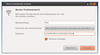 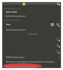
Der Network-Manager nutzt dnsmasq-base zur Konfiguration und verwendet je nach Ubuntu-Version etwas unterschiedliche Einstellungen für die Verbindung und die IP-Adressen:
10.xx.xx.1 - feste IP-Adresse der WLAN-Karte im Ad-Hoc-Modus oder der LAN-Karte / das Gateway
255.255.255.0 - Netzmaske
10.xx.xx.255 - Broadcast
10.xx.xx.10 bis 10.xx.xx.100 - verwendeter IP-Adresspool von dnsmasq_base
statische Adressen für angeschlossene Clients sind möglich
also z.B im Bereich von 10.xx.xx.2 - 10.xx.xx.9 und wieder ab 10.xx.xx.101
Voraussetzungen, die erfüllt sein müssen:
LAN- und Internetverbindung und Konfiguration der Schnittstelle besteht bereits
die WLAN-Karte ist betriebsbereit und wird vom Network-Manager erkannt
Über einen Linksklick  öffnet man nun das Netzwerk-Manager Applet im Panel und wählt "Neues Funknetzwerk erstellen...", gibt den gewünschten Namen des Netzwerks ein (hier im Beispiel
öffnet man nun das Netzwerk-Manager Applet im Panel und wählt "Neues Funknetzwerk erstellen...", gibt den gewünschten Namen des Netzwerks ein (hier im Beispiel Test) und wählt die Art der Verschlüsselung.
Verschlüsselung¶
Erlaubt ist nur eine 64/128bit WEP-Verschlüsselung, auch wenn der Network-Manager die Eingabe eines WPA-Kennworts ermöglicht, funktioniert das in der Regel nicht.
Ab Ubuntu 14.04 Trusty Tahr kann auch ein AdHoc-Netzwerk mit WPA(2)-Verschlüsselung über den Network-Manager aufgebaut werden. Allerdings funktioniert dies nicht unbedingt mit jeder WLAN-Hardware. Ebenso kann es sein, dass Clients wie andere Rechner, Tablets oder Smartphones die Verbindung nicht herstellen können, obwohl das so erzeugte Funknetzwerk angezeigt wird und der eingegebene Zugangsschlüssel korrekt ist.
Im Zweifelsfall probiert man diese Funktion über einen Live-USB Stick mit Ubuntu 14.04 oder höher aus. Falls man diese Funktion nur gelegentlich benötigt, bietet sich diese Variante ebenfalls an um auf dem fest installierten System weiterhin eine andere Ubuntu LTS-Version verwenden zu können.
Der WPA(2)-Zugangsschlüssel darf zwischen 8 und 63 Zeichen umfassen. Schlüssel ab etwa 16 Zeichen, die nicht durch eine einfache Wörterbuchattacke herausgefunden werden können, gelten als sicher. Der Schlüssel sollte sich aus Klein- und Großbuchstaben, Zahlen und den erlaubten Sonderzeichen zusammensetzen.
Weitere Hintergrundinformationen dazu im Forum. Zur Unsicherheit von WEP siehe Wired_Equivalent_Privacy.
Eine Plausibilitätsüberprüfung des verwendeten WEP-Schlüssels findet ansonsten nur bei der Auswahl "WEP 128-bit Schlüssel" statt, weshalb sich diese Option grundsätzlich anbietet, um Fehler weitestgehend zu vermeiden. Die Schlüssellänge in hexadezimalem Code (0-9, a-f, A-F) beträgt zehn Zeichen (64 bit) oder sechsundzwanzig Zeichen (128 bit) die zwingend eingehalten werden muss.
Die Eingabe eines Schlüssels in Klartext (0-9, a-z, A-Z) ist hier ebenfalls möglich. Die einzuhaltende Schlüssellänge beträgt in diesem Fall fünf Zeichen (64 bit) oder dreizehn Zeichen (128 bit). Fehler oder unzulässige Zeichen bei der Eingabe werden nicht angezeigt!
Je nach verwendetem Treiber kann die angebotene Verschlüsselungsmethode auch als WEP40 oder WEP104 angezeigt werden. Das entspricht einer 64bit bzw. 128bit Verschlüsselung, da das Datenpaket mit einem 24-Bit großem Initialisierungsvektor beginnt.
Sonderzeichen wie beispielsweise deutsche Umlaute sind nicht erlaubt, um die Kompatibilität zwischen verschiedenen Betriebssystemen zu gewährleisten.
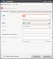
Abschließend klickt man auf "Erzeugen". Die erforderlichen Freigaben der LAN-Verbindung werden nun automatisch angelegt.
Über einen Rechtsklick  auf das Network-Manager Symbol und "Verbindungen bearbeiten" kann die Konfiguration überprüft und bei Bedarf auch angepasst oder gelöscht werden. Das Fenster "Netzwerkverbindungen" wird geöffnet. In diesem Beispiel steht das erzeugte Ad-Hoc Netz natürlich unter "Funknetzwerk". Bearbeitet man diese Konfiguration, muss unter "IPv4 Einstellungen" "Gemeinsam mit anderen Rechnern" eingestellt sein.
auf das Network-Manager Symbol und "Verbindungen bearbeiten" kann die Konfiguration überprüft und bei Bedarf auch angepasst oder gelöscht werden. Das Fenster "Netzwerkverbindungen" wird geöffnet. In diesem Beispiel steht das erzeugte Ad-Hoc Netz natürlich unter "Funknetzwerk". Bearbeitet man diese Konfiguration, muss unter "IPv4 Einstellungen" "Gemeinsam mit anderen Rechnern" eingestellt sein.
Ab Ubuntu 10.10 Maverick Meerkat sind erweiterte Einstellung für das Ad-Hoc Netz, wie z.B. eine manuelle Einstellung des Funkkanals möglich. Es können allerdings auch Parameter eingestellt werden, die die verwendete WLAN-Karte oder auch der Treiber nicht unterstützt.
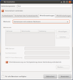
IPv4-Einstellungen:
Auf dem Host:
LAN - "Automatisch DHCP" (Verbindung zum Internet über Router/Modem. Kann auch statisch konfiguriert werden.)
WLAN - "Gemeinsam mit anderen Rechnern" (wird automatisch eingestellt)
Auf den Clients:
WLAN - "Automatisch DHCP"
Die Einstellungen der Schnittstellen und die sich daraus ergebende Routing-Tabelle können zur Kontrolle über Terminal [1] abgefragt werden, nachdem das Netzwerk eingerichtet wurde.
Abfragen für das hier aufgeführte Beispiel:
iwconfig # Konfiguration der WLAN-Schnittstelle abfragen
wlan0 IEEE 802.11g ESSID:"Test"
Mode:Ad-Hoc Frequency:2.412 GHz Cell: 00:39:80:39:0A:03
Bit Rate=54 Mb/s Tx-Power:10 dBm Sensitivity=0/3
...ifconfig # Konfiguration der LAN- oder WLAN-Schnittstelle abfragen
wlan0 Link encap:Ethernet Hardware Adresse 00:04:0e:c2:61:ca
inet Adresse:10.42.43.1 Bcast:10.42.43.255 Maske:255.255.255.0
inet6-Adresse: fe80::204:eff:fec2:61ca/64 Gültigkeitsbereich:Verbindung
...route -n # Routingtabelle anzeigen
Kernel-IP-Routentabelle Ziel Router Genmask Flags Metric Ref Use Iface 192.168.178.0 0.0.0.0 255.255.255.0 U 1 0 0 eth0 10.42.43.0 0.0.0.0 255.255.255.0 U 2 0 0 wlan0 169.254.0.0 0.0.0.0 255.255.0.0 U 1000 0 0 eth0 0.0.0.0 192.168.178.1 0.0.0.0 UG 0 0 0 eth0
Andere Rechner mit WLAN können sich nun direkt mit dem neuen Netzwerk Test und korrekter Eingabe des Zugangsschlüssels verbinden. Die Zuweisung einer IP-Adresse erfolgt automatisch über DHCP.
WLAN auf LAN¶
(gilt auch für UMTS/GPRS- oder Bluetooth-Verbindungen auf LAN)
Eine bestehende WLAN-Verbindung, welche über einen Router die Verbindung zum Internet herstellt, wird über die freie LAN-Schnittstelle anderen Rechnern (Clients) zur Verfügung gestellt. Soll nur ein einziger Rechner ohne Netzwerk-Switch direkt angeschlossen werden, muss möglicherweise ein sog. Crosskabel für die Verbindung verwendet werden. Weitere Hinweise dazu in PC-Direktverbindung per Netzwerk-Kabel.
Über einen Rechtsklick auf das Network-Manager-Icon und "Verbindungen bearbeiten" oder direkt über das Menü "System -> Einstellungen -> Netzwerkverbindungen" wird hier die gewünschte Schnittstelle konfiguriert. Im Beispiel wird über wlan0 die Internetverbindung hergestellt und über eth0 an nachfolgende Rechner durchgereicht.
Der vielleicht schon bestehende Eintrag für Auto eth0 kann bearbeitet werden. Ansonsten einen neuen Eintrag mit Namen "ICS WLAN (wlan0) auf LAN (eth0)" als eindeutige Beschreibung hinzufügen. Unter "IPv4 Einstellungen" muss wieder "Gemeinsam mit anderen Rechnern" ausgewählt und die Änderungen übernommen werden.
Das Kontrollkästchen "Automatisch verbinden" muss bei allen vorhandenen Profilen unter "Kabelgebunden" entfernt werden, ansonsten wird u.U. automatisch das falsche Profil gewählt. Das gewünschte Profil kann nun manuell über das Network-Manager-Applet im Panel aktiviert werden.
Ein oder auch mehrere Rechner können jetzt direkt oder auch über einen Netzwerk-Switch an die Schnittstelle angeschlossen werden. Die Zuweisung einer IP-Adresse erfolgt automatisch über DHCP.
IPv4-Einstellungen:
Auf dem Host:
WLAN - "Automatisch DHCP" (Verbindung zum Internet über WLAN-Router/UMTS-Modem/Bluetooth)
LAN - "Gemeinsam mit anderen Rechnern" (muss manuell eingestellt werden)
Auf den Clients:
LAN - "Automatisch DHCP"
LAN auf LAN¶
Eine bestehende LAN-Verbindung, welche über eine automatische Konfiguration (DHCP) und einen Router die Verbindung zum Internet herstellt, kann über eine weitere LAN-Schnittstelle anderen Rechnern (Clients) zur Verfügung gestellt werden. Soll nur ein einziger Rechner ohne Netzwerk-Switch direkt angeschlossen werden, muss möglicherweise ein sog. Crosskabel für die Verbindung verwendet werden. Weitere Hinweise dazu in PC-Direktverbindung per Netzwerk-Kabel.
Über einen Rechtsklick auf das Network-Manager Symbol und "Verbindungen bearbeiten" oder direkt über das Menü "System -> Einstellungen -> Netzwerkverbindungen" wird hier die gewünschte Schnittstelle konfiguriert. Im Beispiel wird über eth0 die Internetverbindung hergestellt und über eth1 an nachfolgende Rechner durchgereicht.
Es muss ein neuer Eintrag (Profil) für eth1 angelegt werden. Dazu den Namen "ICS LAN1 (eth0) auf LAN2 (eth1)" als eindeutige Beschreibung eintragen. Damit der Network-Manager erkennt, dass dieses Profil nur für die zweite Netzwerkschnittstelle verwendet wird, ist die Hardware-Adresse (MAC) der Karte anzugeben.
Abfrage der MAC-Adresse hier für das Beispiel:
ifconfig eth1 | grep Hard | awk {'print $1,$4,$5,$6'} Die Ausgabe sieht dann etwa so aus:
eth1 Hardware Adresse 00:24:21:0e:8f:4a
Benötigt wird nur die letzte, durch durch Doppelpunkte getrennte, hexadezimale Zeichenfolge.
Das Kontrollkästchen "Automatisch verbinden" darf für dieses Profil nicht gesetzt werden. Unter "IPv4 Einstellungen" muss wieder "Gemeinsam mit anderen Rechnern" eingestellt werden. Änderungen übernehmen. Die Zuweisung einer IP-Adresse erfolgt automatisch über DHCP. Das gewünschte Profil kann nun manuell über das Network-Manager-Applet im Panel aktiviert werden.
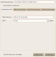
IPv4-Einstellungen:
Auf dem Host:
LAN 1 - "Automatisch DHCP" (Verbindung zum Internet über Router/Modem. Kann auch statisch konfiguriert werden.)
LAN 2 - "Gemeinsam mit anderen Rechnern" (muss manuell eingestellt werden)
Auf den Clients:
LAN - "Automatisch DHCP"
ICS mit Wicd¶
WLAN auf LAN¶
Über die in Wicd integrierte Skriptfunktion kann eine bestehende LAN- oder WLAN-Verbindung ebenfalls weitergeleitet werden. Hier im Beispiel wird die WLAN-Verbindung mit Wicd aufgebaut und anschließend auf die LAN-Schnittstelle durchgereicht. Umgekehrt ist das natürlich ebenfalls möglich. Die hier im Artikel gezeigten Konfigurationsbeispiele über die Datei interfaces können zur dazu verwendet und für die Skripte entsprechend angepasst werden.
Zunächst müssen die benötigten Dateien (Skripte) angelegt und ausführbar gemacht werden:
touch ics_up.sh touch ics_down.sh chmod +x ics_up.sh chmod +x ics_down.sh
Anschließend mit mit einem Editor bearbeiten und folgende Inhalte einfügen.
Startskript ics_up.sh:
1 2 3 4 5 6 7 8 9 10 11 12 13 14 15 16 17 18 19 20 | #!/bin/bash ## LAN-Schnittstelle konfigurieren /sbin/ifconfig eth0 down /bin/sleep 2 /sbin/ifconfig eth0 192.168.3.1 broadcast 192.168.3.255 netmask 255.255.255.0 /bin/sleep 2 /sbin/ifconfig eth0 up ## Maskieren der WLAN-Schnittstelle, Port-Forwarding & Nat aktivieren /sbin/iptables -A FORWARD -o wlan0 -i eth0 -s 192.168.3.0/24 -m conntrack --ctstate NEW -j ACCEPT /sbin/iptables -A FORWARD -m conntrack --ctstate ESTABLISHED,RELATED -j ACCEPT /sbin/iptables -t nat -A POSTROUTING -o wlan0 -j MASQUERADE /sbin/sysctl -w net.ipv4.ip_forward=1 ## dnsmasq-base starten /bin/sleep 2 /usr/bin/killall dnsmasq /bin/sleep 2 /usr/sbin/dnsmasq -i eth0 -I wlan0 -F 192.168.3.10,192.168.3.20,infinite exit 0 |
Stopskript ics_down.sh:
1 2 3 4 5 6 7 8 9 10 11 12 | #!/bin/bash ## LAN-Schnittstelle stoppen /sbin/ifconfig eth0 down ## iptables/Masquerading - vorhandene Regeln und Ketten löschen, dnsmasq stoppen /sbin/iptables -F /sbin/iptables -X /sbin/iptables -t nat -F /usr/bin/killall dnsmasq /sbin/sysctl -w net.ipv4.ip_forward=0 exit 0 |
Die Bezeichnungen der tatsächlich verwendeten Schnittstellen ist natürlich entsprechend anzupassen.
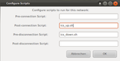
Das Startskript muss nun nach /etc/wicd/scripts/postconnect und das Stopskript nach /etc/wicd/scripts/predisconnect kopiert und der Aufruf in das entsprechenden Verbindungsprofil in Wicd unter Eigenschaften - Skripte eingetragen werden. Die Skripte werden nun entsprechend nach Aufbau der WLAN-Verbindung, bzw. vor Abbau selbiger abgearbeitet.
sudo cp ics_up.sh /etc/wicd/scripts/postconnect sudo cp ics_down.sh /etc/wicd/scripts/predisconnect
Soll nur ein einziger Rechner ohne Netzwerk-Switch direkt angeschlossen werden, muss möglicherweise ein sog. Crosskabel für die Verbindung verwendet werden. Weitere Hinweise dazu in PC-Direktverbindung per Netzwerk-Kabel.
ICS über die Datei interfaces¶
Grundkonfiguration¶
Die Konfiguration über den Network-Manager muss dazu deaktiviert werden. Über einen Rechtsklick auf das Symbol in der Leiste (Panel) sind die LAN- und WLAN-Verbindungen zu deaktivieren, um die Konfiguration über die Datei /etc/network/interfaces zu ermöglichen. Der Manager sollte ansonsten vollständig deinstalliert werden, um Konflikte zu vermeiden.
Für eine Beispiele stehen Skripte zur Steuerung der jeweiligen Konfiguration zur Verfügung welche den Manager automatisch deaktivieren und auch wieder aktivieren, so dass dieser nicht manuell abgeschaltet oder deinstalliert werden muss.
Alle Konfigurationsdateien können mit einem Editor [1] und Root-Rechten [3] bearbeitet werden.
Netzwerk neu starten¶
Nachdem eine der nachfolgend beschriebenen Konfigurationen erstellt wurde, muss das Netzwerk neu gestartet werden. Beobachte die Terminalausgabe [2], achte auch auf Fehlermeldungen und überprüfe anschließend die Konfiguration:
sudo /etc/init.d/networking restart ifconfig -a iwconfig
Dnsmasq¶
So wie beim Network-Manager auch wird hier dnsmasq-base für die gezeigten Beispiele verwendet, was bereits zur Standardinstallation seit Ubuntu 8.10 Intrepid Ibex gehört, aber auch schon unter Ubuntu 8.04 Hardy Heron nachinstalliert werden kann. Dnsmasq wird dann über eine einzige Befehlszeile konfiguriert.
dnsmasq-base (universe [5] - ein DHCP-Server und DNS-Cache (Basispaket))
 mit apturl
mit apturl
Paketliste zum Kopieren:
sudo apt-get install dnsmasq-base
sudo aptitude install dnsmasq-base
Soll Dnsmasq als Vollinstallation verwendet werden, um die Konfigurationsdatei mit erweiterten Optionen nutzen zu können, muss folgendes Programmpaket nachinstalliert werden:
mit apturl
Paketliste zum Kopieren:
sudo apt-get install dnsmasq
sudo aptitude install dnsmasq
Danach sollte die Konfigurationsdatei gesichert werden, da diese div. Beispiele enthält.
sudo cp /etc/dnsmasq.conf /etc/dnsmasq.conf.bak # Originaldatei vorab sichern
Automatische Konfiguration DHCP¶
LAN auf WLAN¶
Eine manuelle Konfiguration bietet erweiterte Einstellmöglichkeiten, wie z.B. Auswahl der IP-Adressen oder freie Kanalwahl der WLAN-Verbindung, was mit dem Network-Manager erst ab Ubuntu 10.10 Maverick Meerkat möglich ist (zulässige Frequenzeinstellungen).
Nachfolgend eine vollständige Beispielkonfiguration für eine Verbindungsfreigabe mittels WLAN Ad-Hoc mit 128-bit WEP-Verschlüsselung auf Funkkanal 1. Die Konfiguration für eth0 muss entsprechend der Gegebenheiten angepasst werden. Start des DHCP-Servers, IP-Forwarding und Maskieren der LAN-Schnittstelle sind temporär und werden bei Systemstart automatisch erneut aktiviert. Die IP-Adresse der lokalen Schnittstelle muss sich zudem in einem separaten Adressraum/Subnetz befinden.
Konfiguration der /etc/network/interfaces:
auto lo iface lo inet loopback auto eth0 iface eth0 inet dhcp auto wlan0 iface wlan0 inet static address 192.168.3.1 netmask 255.255.255.0 broadcast 192.168.3.255 # Ad-Hoc Netz erstellen. ESSID, Schlüssel und Funkkanal anpassen up iwconfig wlan0 mode Ad-Hoc essid Deine_ESSID key 12345678901234567890123456 freq 2412000000 ## Alternative Syntax Kanaleinstellung # up iwconfig wlan0 mode Ad-Hoc essid Deine_ESSID key 12345678901234567890123456 channel 1 ## Alternative Syntax 128bit Schlüssel in Klartext # up iwconfig wlan0 mode Ad-Hoc essid Deine_ESSID key s:abcdefghjklmn channel 1 ## vorhandene Regeln und Ketten zuerst löschen up /sbin/iptables -F up /sbin/iptables -X up /sbin/iptables -t nat -F ## Maskieren der LAN-Schnittstelle, Port-Forwarding & Nat aktivieren up /sbin/iptables -A FORWARD -o eth0 -i wlan0 -s 192.168.0.0/24 -m conntrack --ctstate NEW -j ACCEPT up /sbin/iptables -A FORWARD -m conntrack --ctstate ESTABLISHED,RELATED -j ACCEPT up /sbin/iptables -t nat -A POSTROUTING -o eth0 -j MASQUERADE up /sbin/sysctl -w net.ipv4.ip_forward=1 ## dnsmasq-base verwenden ## verwendeter Adressbereich 192.168.3.10 - 192.168.3.20 up /usr/bin/killall dnsmasq up /bin/sleep 2 post-up /usr/sbin/dnsmasq -i wlan0 -I eth0 -F 192.168.3.10,192.168.3.20,infinite ## Nur bei Verwendung der dnsmasq.conf aktivieren! ## Abschnitt für dnsmasq-base dann deaktivieren! ## dnsmasq neu starten # post-up /etc/init.d/dnsmasq restart
Optionale Basiskonfiguration der /etc/dnsmasq.conf für das hier gezeigte Beispiel:
# DHCP-Server aktiv für Interface interface=wlan0 # DHCP-Server nicht aktiv für Interface no-dhcp-interface=eth0 # IP-Adressbereich / Lease-Time dhcp-range=interface:wlan0,192.168.3.10,192.168.3.20,infinite
Feste IP für die angeschlossenen Clients vergeben. Konfiguration über die /etc/dnsmasq.conf
dhcp-host=<MAC-Adresse>,<Name>,<IP-Adresse>,infinite dhcp-host=<MAC-Adresse>,<IP-Adresse>,infinite dhcp-host=<Rechnername>,<IP-Adresse>,infinite
WLAN auf LAN¶
Die WLAN-Schnittstelle wurde hier für eine Verbindung mit sicherer WPA2-Verschlüsselung vorkonfiguriert. Ebenso ist die WLAN-Konfiguration über WLAN/wpa supplicant möglich.
Soll nur ein einziger Rechner ohne Netzwerk-Switch direkt angeschlossen werden, muss möglicherweise ein sog. Crosskabel für die Verbindung verwendet werden. Weitere Hinweise dazu in PC-Direktverbindung per Netzwerk-Kabel.
Konfiguration der /etc/network/interfaces:
auto lo
iface lo inet loopback
auto wlan0
iface wlan0 inet dhcp
wpa-driver wext
wpa-ssid DeineSSID
wpa-ap-scan 1
wpa-proto RSN
wpa-pairwise CCMP
wpa-group CCMP
wpa-key-mgmt WPA-PSK
wpa-psk "Dein_WPA-Kennwort_in Klartext"
auto eth0
iface eth0 inet static
address 192.168.3.1
netmask 255.255.255.0
broadcast 192.168.3.255
## vorhandene Regeln und Ketten zuerst löschen
up /sbin/iptables -F
up /sbin/iptables -X
up /sbin/iptables -t nat -F
## Maskieren der LAN-Schnittstelle, Port-Forwarding & Nat aktivieren
up /sbin/iptables -A FORWARD -o wlan0 -i eth0 -s 192.168.0.0/24 -m conntrack --ctstate NEW -j ACCEPT
up /sbin/iptables -A FORWARD -m conntrack --ctstate ESTABLISHED,RELATED -j ACCEPT
up /sbin/iptables -t nat -A POSTROUTING -o wlan0 -j MASQUERADE
up /sbin/sysctl -w net.ipv4.ip_forward=1
## dnsmasq-base verwenden
## verwendeter Adressbereich 192.168.3.10 - 192.168.3.20
up /usr/bin/killall dnsmasq
up /bin/sleep 2
post-up /usr/sbin/dnsmasq -i eth0 -I wlan0 -F 192.168.3.10,192.168.3.20,infinite
## Nur bei Verwendung der dnsmasq.conf aktivieren!
## Abschnitt für dnsmasq-base dann deaktivieren!
## dnsmasq neu starten
# post-up /etc/init.d/dnsmasq restartOptionale Basiskonfiguration der /etc/dnsmasq.conf für das hier gezeigte Beispiel:
# DHCP-Server aktiv für Interface interface=eth0 # DHCP-Server nicht aktiv für Interface no-dhcp-interface=wlan0 # IP-Adressbereich / Lease-Time dhcp-range=interface:eth0,192.168.3.10,192.168.3.20,infinite
Steuerung der Konfiguration über ein Skript.
Instant ICS¶
Die Einrichtung ist ebenfalls über ein Skript möglich. Das Skript basiert auf Internetverbindungsfreigabe - Instant-Ad-Hoc, ist aber für ein Verbindung zwischen WLAN und LAN umgeschrieben. Der Network-Manager wird durch das Skript gesteuert und muss nicht manuell deaktiviert werden.
Skript anlegen und ausführbar machen [2]:
touch instant_ICS_WLAN_to_LAN.sh chmod +x instant_ICS_WLAN_to_LAN.sh
Inhalt einfügen:
1 2 3 4 5 6 7 8 9 10 11 12 13 14 15 16 17 18 19 20 21 22 23 24 25 26 27 28 29 30 31 32 33 34 35 36 37 38 39 40 41 42 43 44 45 46 47 48 49 50 51 52 53 54 55 56 57 58 59 60 61 62 63 64 65 66 67 68 69 70 71 72 73 74 75 76 77 78 79 80 81 82 83 84 85 86 87 88 89 90 91 92 93 94 95 96 97 98 99 100 101 102 103 104 105 106 107 108 109 110 111 112 113 114 115 116 117 118 119 120 121 122 123 124 125 126 127 128 129 130 131 132 133 134 135 136 137 138 139 140 141 142 143 144 145 146 147 148 149 150 151 152 153 154 155 156 157 158 159 160 161 162 163 164 165 166 167 168 169 170 171 172 173 174 175 176 177 178 179 180 181 182 183 184 185 186 187 188 189 190 191 192 193 194 195 196 197 198 199 200 201 202 203 204 205 206 207 208 209 210 211 212 213 214 215 216 217 218 219 220 221 222 223 224 225 226 227 228 229 230 231 232 233 234 235 236 237 238 239 240 241 242 243 244 245 246 | #!/bin/bash ## Instant ICS - Modus WLAN auf LAN ## elektronenblitz63 ubuntuusers.de 2011 ## published under GPL v3 ## ## Version 1.0.2 vom 23.Dezember 2011 ## ## Skript ## ## freie Variablen ## ## Schnittstellenkonfiguration WLAN-Interface wlaniface="wlan0" ## Konfiguration des Accesspoints ## SSID (Name) des WLAN Accesspoints eintragen zu dem eine Verbindung hergestellt werden soll ssid="Deine_WLAN_SSID" ## MAC-Adresse des WLAN Accesspoints eintragen mac="XX:XX:XX:XX:XX:XX" ## Einstellungen zur Verschlüsselung ## Konfiguration wpa-supplicant proto="WPA RSN" key_mgmt="WPA-PSK" pairwise="TKIP CCMP" group="TKIP CCMP" ## Zugangskennwort in Klartext (PSK) psk="Dein_Zugangsschluessel_in_Klartext_PSK" ## Treiber für wpa_supplicant (Vorgabe) wpadriver="wext" ## temporäre Konfigurationsdatei für wpa_supplicant home="`pwd`" configfile=$home/wpa_supplicant.tmp ## Schnittsetllenkonfiguration LAN-Interface ## LAN statisch (Vorgabe) laniface="eth0" laddress="192.168.3.1" lbroadcast="192.186.3.255" lnetmask="255.255.255.0" iptablemask="192.168.0.0/24" ## DHCP-Client dhcpclient="dhclient" ## manuelle DNS (drei DNS Einträge, 1xDomain und 1xSearch sind möglich) - Startoption -D ## Beispiel: ## dns="nameserver 192.168.178.1 nameserver 192.168.178.1 nameserver 192.168.178.1 domain fritz.box search fritz.box" dns="nameserver 8.8.4.4 nameserver 8.8.8.8 nameserver 213.73.91.35" ## dnsmasq-base Konfiguration ## DHCP-Adresspool umfasst x-Adressen ipaddresses=10 ## Basisadresse DHCP-Adresspool (LAN-IP + Startadresse) lanbaseip=10 ## Lease-Time leasetime="infinite" ## Proxy Server auf Port x proxyport=3128 ## Pause bevor eine IP-Adresse angefordert wird ## diese Zeit in Sek. bleibt wpa_supplicant für den Verbindungsaufbau connectsleep=15 ## Pause in Sekunden für Konfigurationsparameter ## Vorgabewert 2 configdelay=2 ## Ende freie Variablen ## aut. Adressberechnung DHCP-Range für dnsmasq ## gemäß Vorgabe WLAN-Schnittstelle ipaddresses=$[$ipaddresses+$lanbaseip] baseendaddr="`echo $laddress | tr -s . " " | awk {'print $4'}`" basestartaddr="`echo $laddress | tr -s . " " | awk {'print $1,$2,$3'} | tr -s " " .`" endaddr="$basestartaddr""."$[$startaddr+$ipaddresses] startaddr="$basestartaddr""."$[$baseendaddr+$lanbaseip] ## Optionen D=0 H=0 P=0 while getopts ":hDP" OPTION ; do case $OPTION in D) echo "manueller DNS"; D=1;; P) echo "Portumleitung für Proxy aktiviert"; P=1;; h) echo "Hilfe angefordert"; H=1;; esac done if [ "$H" = "1" ]; then echo Verwendung: instant_ICS_WLAN_to_LAN.sh [-start] [-restart] [-stop] [-P] [-h] [-D] [-d] echo Syntax: echo "sudo ./instant_ICS.sh startet mit Standardparametern, wie [-start]" echo "sudo ./instant_ICS.sh -restart -D startet automatische WLAN-Konfiguration über DHCP, verwendet manuelle DNS" echo "sudo ./instant_ICS.sh -restart" echo "sudo ./instant_ICS.sh -P Portumleitung für Proxyserver (Squid)" echo "sudo ./instant_ICS.sh -stop beendet das ICS Netzwerk" echo "Ende" exit fi echo starte Konfiguration ... if [ "$1" != "-start" ]; then echo stoppe alle Dienste, und Verbindungen ... # iptables Filter löschen /sbin/iptables -F /sbin/iptables -X /sbin/iptables -t nat -F defgw="`route -n | grep UG | awk {'print $2'}`" /sbin/route del default gw $defgw $wlaniface echo '' | tee /etc/resolv.conf /sbin/ifconfig $wlaniface down /usr/bin/killall dnsmasq /sbin/sysctl -w net.ipv4.ip_forward=0 service squid stop # lösche Konfigurationsdatei rm $home/wpa_supplicant.tmp ## Restart Network-Manager - beende ICS Netzwerk if [ "$1" = "-stop" ]; then echo echo "reaktiviere Network-Manager." service network-manager start sleep $configdelay service network-manager restart echo "ICS Konfiguration beendet." exit fi fi # Konfiguration service network-manager stop sleep 1 killall wpa_supplicant killall $dhcpclient sleep $configdelay /sbin/ifconfig $wlaniface down sleep $configdelay /sbin/ifconfig $wlaniface up sleep $configdelay # Konfiguration wpa_supplicant ctrliface="ctrl_interface=/var/run/wpa_supplicant" eapolv="eapol_version=1" apscan="ap_scan=1" ## WLAN-Verbindung vorbereiten echo $ctrliface | tee $configfile echo $eapolv | tee -a $configfile echo $apscan | tee -a $configfile echo 'network={' | tee -a $configfile echo ssid='"'$ssid'"' | tee -a $configfile echo bssid=$mac | tee -a $configfile echo proto=$proto | tee -a $configfile echo key_mgmt=$key_mgmt | tee -a $configfile echo pairwise=$pairwise | tee -a $configfile echo group=$group | tee -a $configfile echo psk='"'$psk'"' | tee -a $configfile echo '}' | tee -a $configfile echo "Starte automatische WLAN-Verbindung über DHCP ..." /sbin/wpa_supplicant -i $wlaniface -D $wpadriver -c $configfile -B sleep $connectsleep echo "Fordere IP-Adresse an ..." /sbin/dhclient $wlaniface sleep $configdelay # manuelle DNS - Startoption -D if [ "$D" = "1" ]; then echo "setze manuelle DNS" echo '# instant_ICS_WLAN_to_LAN.sh' | tee /etc/resolv.conf echo $dns | awk {'print $1,$2'} | tee -a /etc/resolv.conf echo $dns | awk {'print $3,$4'} | tee -a /etc/resolv.conf echo $dns | awk {'print $5,$6'} | tee -a /etc/resolv.conf echo $dns | awk {'print $7,$8'} | tee -a /etc/resolv.conf echo $dns | awk {'print $9,$10'} | tee -a /etc/resolv.conf sleep $configdelay fi # statische Konfiguration der Ethernet-Schnittstelle echo echo "Starte statische LAN-Konfiguration ..." /sbin/ifconfig $laniface down /sbin/ifconfig $laniface $laddress broadcast $lbroadcast netmask $lnetmask /sbin/ifconfig $laniface up sleep $configdelay echo "Vorgabewerte:" echo "Schnittstelle: "$laniface" IP: "$laddress" Broadcast: "$lbroadcast" Netzmaske: "$lnetmask # aktiviere IP-Forward und NAT echo "starte IP-Forward, Masquerading und NAT" /sbin/iptables -A FORWARD -o $wlaniface -i $laniface -s $iptablemask -m conntrack --ctstate NEW -j ACCEPT /sbin/iptables -A FORWARD -m conntrack --ctstate ESTABLISHED,RELATED -j ACCEPT /sbin/iptables -t nat -A POSTROUTING -o $wlaniface -j MASQUERADE /sbin/sysctl -w net.ipv4.ip_forward=1 sleep $configdelay # dnsmasq starten echo "starte dnsmasq" echo "DHCP-Range dnsmasq - Startadresse: "$startaddr" Endadresse: "$endaddr /usr/sbin/dnsmasq -i $laniface -I $wlaniface -F $startaddr,$endaddr,$leasetime # Portumleitung für Squid Proxyserver - Startoption -P if [ "$P" = "1" ]; then /sbin/iptables -t nat -A PREROUTING -i $wlaniface -p tcp --dport 80 -j REDIRECT --to-port 3128 echo "Port 80 $wlaniface auf Port $proxyport umgeleitet (Squid Proxyserver)" echo "starte Squid Proxyserver ..." sleep $configdelay service squid start -n fi # Ausgabe der Konfiguration. Einstellungen der Schnittstellen, # Routingtabelle und DNS prüfen echo "prüfe Konfiguration ..." echo echo "Systemkonfiguration: /etc/resolv.conf" /bin/cat /etc/resolv.conf /sbin/route -n echo echo Konfiguration LAN: /sbin/ifconfig $laniface | egrep 'Link|inet Adresse' echo echo Konfiguration WLAN: /sbin/ifconfig $wlaniface | egrep 'Link|inet Adresse' echo echo "Konfiguration beendet" exit 0 |
Parameter der Schnittstellen, IP-Adressbereiche usw. können im Deklarationsblock des Skripts angepasst werden.
Im Terminal [2] als root[3] kann das Skript nun mit verschiedenen Parametern aufgerufen werden:
sudo ./instant_ICS_WLAN_to_LAN.sh [-start|-restart|-stop] sudo ./instant_ICS_WLAN_to_LAN.sh # startet mit automatischer Konfiguration (wie mit [-start]) sudo ./instant_ICS_WLAN_to_LAN.sh -start # startet alle Verbindungen und Dienste mit automatischer Konfiguration sudo ./instant_ICS_WLAN_to_LAN.sh -restart # erneuert alle Verbindungen und Dienste mit automatischer Konfiguration sudo ./instant_ICS_WLAN_to_LAN.sh -stop # beendet alle Verbindungen und Dienste
Weitere Startoptionen sind im Skript beschrieben.
LAN auf LAN¶
Soll nur ein einziger Rechner ohne Netzwerk-Switch direkt angeschlossen werden, muss möglicherweise ein sog. Crosskabel für die Verbindung verwendet werden. Weitere Hinweise dazu in PC-Direktverbindung per Netzwerk-Kabel.
Konfiguration der /etc/network/interfaces:
auto lo iface lo inet loopback auto eth0 iface eth0 inet dhcp auto eth1 iface eth1 inet static address 192.168.3.1 netmask 255.255.255.0 broadcast 192.168.3.255 ## vorhandene Regeln und Ketten zuerst löschen up /sbin/iptables -F up /sbin/iptables -X up /sbin/iptables -t nat -F ## Maskieren der LAN-Schnittstelle, Port-Forwarding & Nat aktivieren up /sbin/iptables -A FORWARD -o eth0 -i eth1 -s 192.168.0.0/24 -m conntrack --ctstate NEW -j ACCEPT up /sbin/iptables -A FORWARD -m conntrack --ctstate ESTABLISHED,RELATED -j ACCEPT up /sbin/iptables -t nat -A POSTROUTING -o eth0 -j MASQUERADE up /sbin/sysctl -w net.ipv4.ip_forward=1 ## dnsmasq-base verwenden ## verwendeter Adressbereich 192.168.3.10 - 192.168.3.20 up /usr/bin/killall dnsmasq up /bin/sleep 2 post-up /usr/sbin/dnsmasq -i eth1 -I eth0 -F 192.168.3.10,192.168.3.20,infinite ## Nur bei Verwendung der dnsmasq.conf aktivieren! ## Abschnitt für dnsmasq-base dann deaktivieren! ## dnsmasq neu starten # post-up /etc/init.d/dnsmasq restart
Optionale Basiskonfiguration der /etc/dnsmasq.conf für das hier gezeigte Beispiel:
# DHCP-Server aktiv für Interface interface=eth1 # DHCP-Server nicht aktiv für Interface no-dhcp-interface=eth0 # IP-Adressbereich / Lease-Time dhcp-range=interface:eth1,192.168.3.10,192.168.3.20,infinite
Steuerung der Konfiguration über ein Skript.
Instant ICS¶
Die Einrichtung ist ebenfalls über ein Skript möglich. Das Skript basiert auf Internetverbindungsfreigabe - Instant-Ad-Hoc, ist aber für ein Verbindung zwischen zwei Ethernetschnittstellen (LAN auf LAN) umgeschrieben. Der Network-Manager wird durch das Skript gesteuert und muss nicht manuell deaktiviert werden.
Skript anlegen und ausführbar machen [2]:
touch instant_ICS.sh chmod +x instant_ICS.sh
Inhalt einfügen:
1 2 3 4 5 6 7 8 9 10 11 12 13 14 15 16 17 18 19 20 21 22 23 24 25 26 27 28 29 30 31 32 33 34 35 36 37 38 39 40 41 42 43 44 45 46 47 48 49 50 51 52 53 54 55 56 57 58 59 60 61 62 63 64 65 66 67 68 69 70 71 72 73 74 75 76 77 78 79 80 81 82 83 84 85 86 87 88 89 90 91 92 93 94 95 96 97 98 99 100 101 102 103 104 105 106 107 108 109 110 111 112 113 114 115 116 117 118 119 120 121 122 123 124 125 126 127 128 129 130 131 132 133 134 135 136 137 138 139 140 141 142 143 144 145 146 147 148 149 150 151 152 153 154 155 156 157 158 159 160 161 162 163 164 165 166 167 168 169 170 171 172 173 174 175 176 177 178 179 180 181 182 183 184 185 186 187 188 189 190 191 192 193 194 195 196 197 198 199 200 201 202 203 204 205 206 207 208 209 210 211 212 213 214 215 216 217 218 219 220 221 222 223 224 225 226 227 228 229 230 231 232 233 234 235 236 237 238 239 240 241 242 243 244 245 246 247 248 249 250 251 252 253 254 255 256 257 258 259 260 261 262 263 264 265 266 267 268 269 270 271 272 273 274 275 276 277 278 279 280 281 282 283 284 285 286 287 288 289 290 291 | #!/bin/bash ## Instant ICS - Modus LAN auf LAN ## elektronenblitz63 ubuntuusers.de 2011 ## published under GPL v3 ## ## Version 1.0.1 vom 27.November 2011 ## ## Skript ## ## freie Variablen ## ## LAN statisch (Beispiel) (Startoption [-f]) ## Internetverbindung # laniface=eth0 laddress=192.168.178.10 lbroadcast=192.168.178.255 lnetmask=255.255.255.0 lgateway=192.168.178.1 ### DNS (drei DNS Einträge, 1x Domain und 1x Search sind möglich) - nur mit Startoption [-f] # Beispiel: # dns="nameserver 192.168.178.1 nameserver 213.73.91.35 nameserver 87.118.100.175 domain fritz.box search fritz.box" dns="nameserver 8.8.4.4 nameserver 8.8.8.8 nameserver 213.73.91.35" ## dnsmasq DNS (manuell) (Startoption [-D]) ## dnsmasq ignoriert dann /etc/resolv.conf mandns=8.8.4.4 ## MAC-Adresse (optional) (Startoption [-m]) lmacaddress=00:12:79:c0:49:ae ## LAN2 statisch (Beispiel) ## hier werden weitere Clients angeschlossen # laniface2=eth1 address2=192.168.3.1 broadcast2=192.186.3.255 netmask2=255.255.255.0 iptablemask=192.168.0.0/24 ## DNSMASQ Konfiguration # DHCP-Adresspool umfasst x-Adressen ipaddresses=10 # Basisadresse DHCP-Adresspool (WLAN-IP + X) lanbaseip=10 # Lease-Time leasetime=infinite ## Proxy Server auf Port x proxyport=3128 ## Ende freie Variablen ## aut. Adressberechnung DHCP-Range für dnsmasq ## gemäß Vorgabe WLAN-Schnittstelle ipaddresses=$[$ipaddresses+$lanbaseip] baseendaddr="`echo $address2 | tr -s . " " | awk {'print $4'}`" basestartaddr="`echo $address2 | tr -s . " " | awk {'print $1,$2,$3'} | tr -s " " .`" endaddr="$basestartaddr""."$[$startaddr+$ipaddresses] startaddr="$basestartaddr""."$[$baseendaddr+$lanbaseip] ## Pause vor LAN-Verbindungstest pause=4 pingout="" ## Pause in Sekunden für Konfigurationsparameter ## Vorgabewert 3 configdelay=2 ## Optionen A=1 B=0 D=0 H=0 P=0 while getopts ":dfmhDP" OPTION ; do case $OPTION in d) echo "konfiguriere LAN1 über DHCP"; A=1;; f) echo "konfiguriere LAN1 statisch"; A=2;; m) echo "MAC-Change LAN1 ein"; B=1;; D) echo "manueller DNS"; D=1;; P) echo "Portumleitung für Proxy aktiviert"; P=1;; h) echo "Hilfe angefordert"; H=1;; esac done if [ "$H" = "1" ]; then echo Verwendung: instant_AdHoc.sh [-start] [-restart] [-stop] [-d] [-f] [-m] [-h] [-D] echo Syntax: echo "sudo ./instant_AdHoc.sh startet mit Standardparametern, wie [-start][-d]" echo "sudo ./instant_AdHoc.sh -d startet mit Standardparametern, wie [-start]" echo "sudo ./instant_AdHoc.sh -f statische LAN-Konfiguration" echo "sudo ./instant_AdHoc.sh -f -m statische LAN-Konfiguration, MAC-Änderung" echo "sudo ./instant_AdHoc.sh -f -m -c statischer LAN-Konfiguration, MAC-Änderung, MAC-Filter" echo "sudo ./instant_AdHoc.sh -start -f statische LAN-Konfiguration" echo "sudo ./instant_AdHoc.sh -restart -f statische LAN-Konfiguration" echo "sudo ./instant_AdHoc.sh -restart -d -D automatische LAN-Konfiguration über DHCP, dnsmasq ignoriert System-DNS" echo "bei Option [-D] ignoriert dnsmasq die Einträge der /etc/resolv.conf" echo "sudo ./instant_AdHoc.sh -restart -f -m -c statische LAN-Konfiguration, MAC-Änderung, MAC-Filter" echo "sudo ./instant_AdHoc.sh -P Portumleitung für Proxyserver (Squid)" echo "sudo ./instant_AdHoc.sh -stop beendet das ICS Netzwerk" echo "Ende" exit fi echo starte Konfiguration ... sleep 2 if [ "$1" != "-start" ]; then echo stoppe alle Dienste, und Verbindungen ... # iptables Filter löschen /sbin/iptables -F /sbin/iptables -X /sbin/iptables -t nat -F defgw="`route -n | grep UG | awk {'print $2'}`" /sbin/route del default gw $defgw $laniface echo '' | tee /etc/resolv.conf /sbin/ifconfig $laniface2 down /sbin/ifconfig $laniface down /usr/bin/killall dnsmasq /sbin/sysctl -w net.ipv4.ip_forward=0 service squid stop ## Restart Network-Manager - beende ICS Netzwerk if [ "$1" = "-stop" ]; then echo echo "reaktiviere Network-Manager." service network-manager start sleep $configdelay service network-manager restart echo "ICS Konfiguration beendet." exit fi fi ## MAC-Adresse LAN1 abgleichen if [ "$B" = "1" ]; then currentmac="`ifconfig $laniface | grep Adresse | awk {'print $6'}`" echo Schnittstelle $laniface, MAC-Adresse: $currentmac echo Vorgabe: $lmacaddress if [ "$currentmac" = "$lmacaddress" ]; then echo Übereinstimmende MAC-Adresse else /sbin/ifconfig $laniface down /sbin/ip link set dev $laniface addr $lmacaddress currentmac="`ifconfig $laniface | grep Adresse | awk {'print $6'}`" echo versuche MAC-Adresse zu ändern ... echo Schnittstelle $laniface, MAC-Adresse: $currentmac if [ "$currentmac" = "$lmacaddress" ]; then echo Änderung der MAC-Adresse erfolgreich! else echo Änderung der MAC-Adresse nicht erfolgreich! echo fahre fort ... fi fi fi # Konfiguration LAN echo "Beende Network-Manager" service network-manager stop echo "Starte benötigte Dienste, und Verbindungen ..." sleep $configdelay if [ "$A" = "1" ]; then sleep $configdelay echo echo "Starte automatische LAN-Verbindung über DHCP ..." /sbin/dhclient $laniface else sleep $configdelay echo echo "Starte statische LAN-Konfiguration ..." /sbin/ifconfig $laniface down /sbin/ifconfig $laniface $laddress broadcast $lbroadcast netmask $lnetmask sleep $configdelay ## vorhandene Route ggf. löschen echo "Lösche Default-Gateway ..." defgw="`route -n | grep UG | awk {'print $2'}`" /sbin/route del default gw $defgw $laniface echo echo "Setze Gateway und Route ..." /sbin/route add default gw $lgateway $laniface sleep $configdelay ## DNS eintragen (nur bei statischer Konfiguration - Option [-f]) echo setze DNS echo '# erzeugt durch instant_AdHoc.sh' | tee /etc/resolv.conf echo $dns | awk {'print $1,$2'} | tee -a /etc/resolv.conf echo $dns | awk {'print $3,$4'} | tee -a /etc/resolv.conf echo $dns | awk {'print $5,$6'} | tee -a /etc/resolv.conf echo $dns | awk {'print $7,$8'} | tee -a /etc/resolv.conf echo $dns | awk {'print $9,$10'} | tee -a /etc/resolv.conf sleep $pause fi ## Verbindungstest LAN echo LAN Verbindungstest ... pingout="`(ping -c1 $lgateway | egrep -wo '100% packet loss')`" if [ "$pingout" = "100% packet loss" ]; then echo kann Gateway nicht pingen $pingout - Verbindung fehlgeschlagen! echo breche Vorgang ab! echo Kabelverbindung oder Konfiguration überprüfen! /sbin/ifconfig $laniface down if [ "$A" = "2" ]; then echo lösche Default-Gateway ... defgw="`route -n | grep UG | awk {'print $2'}`" /sbin/route del default gw $defgw $laniface fi echo Vorgabewerte: echo Schnittstelle: $laniface IP: $laddress Broadcast: $lbroadcast Netzmaske: $lnetmask echo IP-Adresse Gateway: $lgateway exit fi echo Verbindungstest erfolgreich! # LAN2-Schnittstelle statisch konfigurieren echo Konfiguriere WLAN, starte WLAN Ad-Hoc Modus ... /sbin/ifconfig $laniface2 down sleep 1 /sbin/ifconfig $laniface2 $address2 broadcast $broadcast2 netmask $netmask2 /sbin/ifconfig $laniface2 up echo starte IP-Forward, Masquerading und NAT /sbin/iptables -A FORWARD -o $laniface -i $laniface2 -s $iptablemask -m conntrack --ctstate NEW -j ACCEPT /sbin/iptables -A FORWARD -m conntrack --ctstate ESTABLISHED,RELATED -j ACCEPT /sbin/iptables -t nat -A POSTROUTING -o $laniface -j MASQUERADE /sbin/sysctl -w net.ipv4.ip_forward=1 ## dnsmasq starten echo starte dnsmasq echo DHCP-Range dnsmasq - Startadresse: $startaddr Endadresse: $endaddr /usr/bin/killall dnsmasq if [ "$S" != "0" ]; then /usr/sbin/dnsmasq -i $laniface2 -I $laniface -F $startaddr,$endaddr,$leasetime else /usr/sbin/dnsmasq -i $wlaniface -I $laniface -F $startaddr,$endaddr,$leasetime -R -S $mandns echo DNS Systemeinstellung wird ignoriert, dnsmasq verwendet DNS: $mandns fi ## Portumleitung für Squid Proxyserver if [ "$P" = "1" ]; then /sbin/iptables -t nat -A PREROUTING -i $laniface2 -p tcp --dport 80 -j REDIRECT --to-port 3128 echo "Port 80 $laniface2 auf Port $proxyport umgeleitet (Squid Proxyserver)" echo starte Squid Proxyserver ... sleep 4 service squid start -n fi ## Ausgabe der Konfiguration. Einstellungen der Schnittstellen, ## Routingtabelle und DNS prüfen echo "prüfe Konfiguration ..." if [ "$A" = "2" ]; then echo vorgegebene DNS: $dns fi echo "Systemkonfiguration: /etc/resolv.conf" /bin/cat /etc/resolv.conf /sbin/route -n echo echo Konfiguration LAN: /sbin/ifconfig $laniface | egrep 'Link|inet Adresse' echo Konfiguration WLAN: /sbin/ifconfig $laniface2 | egrep 'Link|inet Adresse' echo "Konfiguration beendet" exit 0 |
Parameter der Schnittstellen, IP-Adressbereiche usw. können im Deklarationsblock des Skripts angepasst werden.
Im Terminal [2] als root[3] kann das Skript nun mit verschiedenen Parametern aufgerufen werden:
sudo ./instant_ICS.sh [-start|-restart|-stop] sudo ./instant_ICS.sh # startet mit automatischer Konfiguration (wie mit [-start]) sudo ./instant_ICS.sh -start # startet alle Verbindungen und Dienste mit automatischer Konfiguration sudo ./instant_ICS.sh -restart # erneuert alle Verbindungen und Dienste mit automatischer Konfiguration sudo ./instant_ICS.sh -stop # beendet alle Verbindungen und Dienste
Weitere Startoptionen sind im Skript beschrieben.
DSL-Modem teilen¶
Folgende Konfiguration stellt bereits die Funktionalität eines einfachen Routers bereit. Die Internetverbindung wird über eth0 und einem angeschlossenen Modem mittels pppoeconf aufgebaut, die Verbindung über eine zweite Ethernet-Schnitstelle, hier (eth1) und WLAN-Netzwerk Ad-Hoc (wlan0), geteilt.
Sofern die eingesetzte WLAN-Hardware die Einrichtung eines vollwertigen Acess-Points mit sicherer WPA oder sogar WPA2-Verschlüsselung erlaubt, sollte diese Methode bevorzugt werden. Informationen dazu in WLAN Router.
Hier wird Dnsmasq als Vollinstallation benötigt (s.o.).
Soll nur ein einziger Rechner ohne Netzwerk-Switch direkt an die zweite Ethernet-Schnittstelle angeschlossen werden, muss möglicherweise ein sog. Crosskabel für die Verbindung verwendet werden. Weitere Hinweise dazu in PC-Direktverbindung per Netzwerk-Kabel.
Konfiguration der /etc/network/interfaces:
auto lo iface lo inet loopback # an eth0 ist der Modem angeschlossen auto eth0 iface eth0 inet manual # pppoe Verbindung auto dsl-provider iface dsl-provider inet ppp pre-up /sbin/ifconfig eth0 up # line maintained by pppoeconf provider dsl-provider # lokales Netzwerk LAN-Anschluß 2 auto eth1 iface eth1 inet static address 192.168.3.1 netmask 255.255.255.0 broadcast 192.168.3.255 # lokales WLAN-Netzwerk auto wlan0 iface wlan0 inet static address 192.168.3.2 # Bei Verbindungsproblemen alternativ ein anderes Subnetz und Broadcast wählen # address 192.168.4.1 netmask 255.255.255.0 broadcast 192.168.3.255 # broadcast 192.168.4.255 # Ad-Hoc Netz erstellen. ESSID, Schlüssel und Funkkanal anpassen up /sbin/iwconfig wlan0 mode Ad-Hoc essid Deine_ESSID key 12345678901234567890123456 freq 2412000000 ## vorhandene Regeln und Ketten zuerst löschen up /sbin/iptables -F up /sbin/iptables -X up /sbin/iptables -t nat -F ## Maskieren der LAN-Schnittstelle, Port-Forwarding & Nat aktivieren ## Die Eingangs-Schnittstelle kann hier entfallen, da mehre Teilnetze auf das Internet zugreifen dürfen. ## In diesem Fall muss hier 192.168.0.0/16 verwendet werden. up iptables -A FORWARD -o ppp0 -s 192.168.0.0/16 -m conntrack --ctstate NEW -j ACCEPT up /sbin/iptables -A FORWARD -m conntrack --ctstate ESTABLISHED,RELATED -j ACCEPT up /sbin/iptables -t nat -A POSTROUTING -o ppp0 -j MASQUERADE up /sbin/sysctl -w net.ipv4.ip_forward=1 ## dnsmasq neu starten up /etc/init.d/dnsmasq restart
Basiskonfiguration der /etc/dnsmasq.conf:
# DHCP-Server aktiv für Interface interface=eth1 interface=wlan0 # DHCP-Server nicht aktiv für Interface no-dhcp-interface=eth0 # IP-Adressbereich / Lease-Time dhcp-range=interface:eth1,192.168.3.10,192.168.3.40,infinite # Verteile an eth1 Adressen 192.168.3.10..192.168.3.40 dhcp-range=interface:wlan0,192.168.3.10,192.168.3.40,infinite # Verteile an wlan0 Adressen 192.168.3.10..192.168.3.40 # Bei Verbindungsproblemen (IP-Adresse wird nicht zugewiesen) alternativ ein anderes Subnetz für WLAN wählen # dhcp-range=interface:wlan0,192.168.4.10,192.168.4.40,infinite # Verteile an wlan0 Adressen 192.168.4.10..192.168.4.40
MAC-Adressfilter einrichten¶
Eine WEP-Verschlüsselung ist unsicher und mit den entsprechenden Werkzeugen schnell entschlüsselt. Um etwas zusätzliche Sicherheit zu erlangen, kann der IP-Adressbereich des DHCP-Servers (dnsmasq) in der Konfigurationsdatei auf die tatsächliche Anzahl der angeschlossenen Rechner begrenzt werden. Zusätzlich können über iptables entsprechende Filterregeln erstellt werden, so dass nur bekannten Rechnern eine Datenübertragung bzw. der Internet-Zugriff gestattet wird.
Allerdings kann diese Maßnahme mit dem entsprechenden Hintergrundwissen ebenfalls relativ einfach überwunden werden, da MAC-Adressen unverschlüsselt im Netzwerk übertragen werden. Sensible persönliche Daten sollten in einem WEP-Verschlüsselten Netzwerk deshalb nicht ohne Dateiverschlüsselung oder Kennwortschutz freigegeben werden und zugänglich sein.
An die bestehende Konfiguration in der Datei /etc/network/interfaces ist folgendes anzuhängen. Die gezeigten MAC-Geräteadressen sind natürlich nur Beispiele. Für jeden Rechner im Netzwerk ist eine Filterregel mit der MAC-Adresse der verbauten LAN- bzw. WLAN-Karte einzufügen. Hier wurden Filterregeln für LAN und WLAN berücksichtigt. Die Bezeichnung der tatsächlich verwendeten Schnittstellen ist zu beachten.
# MAC-Adressfilter aktivieren / Datenübertragung für eingetragene WLAN-Geräte zulassen up /sbin/iptables -A INPUT -i wlan0 -m mac --mac-source 00:14:f6:2d:0a:b1 -j ACCEPT up /sbin/iptables -A INPUT -i wlan0 -m mac --mac-source 1c:2a:b4:30:4a:23 -j ACCEPT # MAC-Adressfilter aktivieren / Datenübertragung für eingetragene LAN-Geräte zulassen up /sbin/iptables -A INPUT -i eth1 -m mac --mac-source 00:24:12:0e:9f:4a -j ACCEPT up /sbin/iptables -A INPUT -i eth1 -m mac --mac-source 00:26:35:10:2a:1b -j ACCEPT # alle anderen Datenpakete die über die freigegebene WLAN-Schnittstelle kommen verwerfen up /sbin/iptables -A INPUT -i wlan0 -j DROP # alle anderen Datenpakete die über die freigegebene LAN-Schnittstelle kommen verwerfen up /sbin/iptables -A INPUT -i eth1 -j DROP
Das Netzwerk abschließend wie beschrieben neu starten und die Filterregeln überprüfen:
sudo iptables -t filter -n -L -v
Die Ausgabe für die Kette "INPUT" sollte passend zum Beispiel folgendermaßen aussehen (die Anzahl der übertragenen Datenpakete und Bytes ändert sich natürlich):
Chain INPUT (policy ACCEPT 617 packets, 229K bytes)
pkts bytes target prot opt in out source destination
65 8826 ACCEPT all -- wlan0 * 0.0.0.0/0 0.0.0.0/0 MAC 00:14:f6:2d:0a:b1
13 1564 ACCEPT all -- wlan0 * 0.0.0.0/0 0.0.0.0/0 MAC 1c:2a:b4:30:4a:23
0 0 ACCEPT all -- eth1 * 0.0.0.0/0 0.0.0.0/0 MAC 00:24:12:0E:9F:4A
0 0 ACCEPT all -- eth1 * 0.0.0.0/0 0.0.0.0/0 MAC 00:26:35:10:2A:1B
6 1158 DROP all -- wlan0 * 0.0.0.0/0 0.0.0.0/0
0 0 DROP all -- eth1 * 0.0.0.0/0 0.0.0.0/0
...Für eine erweiterte Konfiguration und die Einrichtung spezieller Filtertabellen bietet sich nathelper, ufw oder auch anfd an. Entsprechende Befehle können ebenfalls in die Datei interfaces integriert werden. Ebenso lassen sich diverse Serverdienste einrichten.
Statische Konfiguration¶
Die WLAN-Verbindung des Host-Rechners die z.B. über eine manuelle Konfiguration (interfaces) oder über Wicd aufgebaut wird, soll ohne zusätzlichen DHCP-Server/DNS-Cache (Dnsmasq) über LAN eth0 einem oder auch mehreren anderen Rechnern die Internetverbindug zur Verfügung stellen und auch einen lokalen Server oder ein NAS anbinden.
Über einen Netzwerk-Switch können so auch mehrere Clients angeschlossen und untereinander vernetzt werden. Soll nur ein einziger Rechner ohne Netzwerk-Switch direkt angeschlossen werden, muss möglicherweise ein sog. Crosskabel für die Verbindung verwendet werden. Weitere Hinweise dazu in PC-Direktverbindung per Netzwerk-Kabel.
WLAN auf LAN¶
Beispiel mit manueller Konfiguration des WLAN und LAN Konfiguration der /etc/network/interfaces des Host-Rechners:
auto lo
iface lo inet loopback
auto wlan0
iface wlan0 inet dhcp
wpa-driver wext
wpa-ssid DeineSSID
wpa-ap-scan 1
wpa-proto RSN
wpa-pairwise CCMP
wpa-group CCMP
wpa-key-mgmt WPA-PSK
wpa-psk "Dein_WPA-Kennwort_in Klartext"
auto eth0
iface eth0 inet static
address 192.168.3.1
netmask 255.255.255.0
broadcast 192.168.3.255
## vorhandene Regeln und Ketten zuerst löschen
up /sbin/iptables -F
up /sbin/iptables -X
up /sbin/iptables -t nat -F
## Maskieren der LAN-Schnittstelle, Port-Forwarding & Nat aktivieren
up /sbin/iptables -A FORWARD -o wlan0 -i eth0 -s 192.168.0.0/24 -m conntrack --ctstate NEW -j ACCEPT
up /sbin/iptables -A FORWARD -m conntrack --ctstate ESTABLISHED,RELATED -j ACCEPT
up /sbin/iptables -t nat -A POSTROUTING -o wlan0 -j MASQUERADE
up /sbin/sysctl -w net.ipv4.ip_forward=1 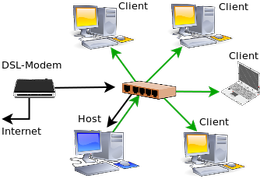
DSL-Modem teilen¶
Ein Router ist nicht vorhanden, alle Rechner verfügen nur über eine einzige Ethernet-Schnittstelle und sind über einen Netzwerk-Switch miteinander verbunden. Der DSL-Modem ist ebenfalls am Switch angeschlossen.
Einer der Rechner (Host) übernimmt die Einwahl (über pppoeconf) und leitet die Verbindung über ein virtuelles Interface (eth0:1) in das lokale Subnetz weiter. Die Konfiguration erfolgt ausschließlich über die /etc/network/interfaces.
Zusätzlich empfiehlt es sich hier über einen transparenten Proxyserver wie z.B. Squid auf dem Host-Rechner einen Daten-Cache einzurichten. Anleitung dazu weiter unten in diesem Artikel.
Der vom Provider zugewiesenen DNS-Server des Host-Rechners kann nach Verbindungsaufbau abgefragt und ebenfalls für die Konfiguration der Clients verwendet werden:
cat /etc/resolv.conf
Konfiguration der /etc/network/interfaces:
auto lo iface lo inet loopback # an eth0 ist der Modem angeschlossen / LAN-Anschluß 1-0 auto eth0 iface eth0 inet manual # pppoe Verbindung auto dsl-provider iface dsl-provider inet ppp pre-up /sbin/ifconfig eth0 up # line maintained by pppoeconf provider dsl-provider # lokales Netzwerk LAN-Anschluß 1-1 auto eth0:1 iface eth0:1 inet static address 192.168.3.1 netmask 255.255.255.0 broadcast 192.168.3.255 ## vorhandene Regeln und Ketten zuerst löschen up /sbin/iptables -F up /sbin/iptables -X up /sbin/iptables -t nat -F ## Maskieren der LAN-Schnittstelle, Port-Forwarding & Nat aktivieren up /sbin/iptables -A FORWARD -o ppp0 -s 192.168.0.0/16 -m conntrack --ctstate NEW -j ACCEPT up /sbin/iptables -A FORWARD -m conntrack --ctstate ESTABLISHED,RELATED -j ACCEPT up /sbin/iptables -t nat -A POSTROUTING -o ppp0 -j MASQUERADE up /sbin/sysctl -w net.ipv4.ip_forward=1 # Vorbereitung für transparenten Proxyserver Squid # up service squid stop # post-up /sbin/iptables -t nat -A PREROUTING -i wlan0 -p tcp --dport 80 -j REDIRECT --to-port 3128 # post-up service squid start -n
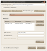 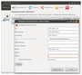
Konfiguration der Clients¶
Die Konfiguration muss ebenfalls statisch erfolgen. Das kann manuell über die Datei /etc/network/interfaces, mit dem Network-Manager oder auch Wicd durchgeführt werden. Statische IP-Adressen im lokalen Netz dürfen nicht doppelt vergeben werden und müssen sich im selben Adressbereich befinden wie die des Host-Rechners!
Mit Netzwerkmanager¶
Über einen Rechtsklick auf das Network-Manager Symbol und "Verbindungen bearbeiten" kann ein neuer Eintrag für die statische Konfiguration angelegt werden. Im Hauptfenster von Wicd über "Hinzufügen". Der verwendete DNS, hier im Beispiel die IP-Adresse des vorgeschalteten Routers, ist zusätzlich einzutragen.
Über die interfaces¶
Konfiguration der /etc/network/interfaces (Beispiel):
auto lo iface lo inet loopback auto eth0 iface eth0 inet static address 192.168.3.10 netmask 255.255.255.0 broadcast 192.168.3.255 gateway 192.168.3.1 # IP-Adresse LAN-Schnittstelle des Host ## optional benötigte DNS eintragen ## drei Einträge sind möglich # post-up /bin/echo 'nameserver 192.168.178.1' | tee /etc/resolv.conf # post-up /bin/echo 'nameserver 213.73.91.35' | tee -a /etc/resolv.conf # post-up /bin/echo 'nameserver 87.118.100.175' | tee -a /etc/resolv.conf ## optional Domain und Sucheintrag # post-up /bin/echo 'domain fritz.box' | tee -a /etc/resolv.conf # post-up /bin/echo 'search fritz.box' | tee -a /etc/resolv.conf
Netzwerkbrücke¶
Ein Rechner (Host) stellt über einen DSL-Router und Schnittstelle (eth0) die Internetverbindung her. Über eine zweite Schnittstelle (eth1) wird die Verbindung durchgereicht. Beide Anschlüsse werden über eine "Netzwerkbrücke" miteinander verbunden. Die Verbindung ist "transparent", dass heißt alle Rechner im Netzwerk verhalten sich so, als wären sie direkt am Router angeschlossen. Dieser verteilt IP-Adressen über DHCP. Eine statische Konfiguration ist ebenfalls möglich. Siehe dazu auch Netzwerkbrücke.
Über einen Netzwerk-Switch können so auch mehrere Clients angeschlossen und untereinander vernetzt werden. Soll nur ein einziger Rechner ohne Netzwerk-Switch direkt angeschlossen werden, muss möglicherweise ein sog. Crosskabel für die Verbindung verwendet werden. Weitere Hinweise dazu in PC-Direktverbindung per Netzwerk-Kabel.
Auf dem Host-Rechner wird dazu folgende Software benötigt:
bridge-utils (Software um eine Netzwerkbrücke herzustellen)
mit apturl
Paketliste zum Kopieren:
sudo apt-get install bridge-utils
sudo aptitude install bridge-utils
LAN auf LAN¶
Eine permanente Konfiguration des Host-Rechners erfolgt manuell über die /etc/network/interfaces.
auto lo iface lo inet loopback auto br0 iface br0 inet dhcp bridge_ports eth0 eth1 bridge_fd 5 bridge_stp no
Die Clients können wie gewohnt über einen Netzwerkmanager oder auch manuell konfiguriert werden.
Steuerung über Skript¶
Über ein kleines Skript kann eine bei Bedarf benötigte Netzwerkbrücke erstellt und auch wieder entfernt werden. Die Datei /etc/network/interfaces muss dazu nicht verändert werden. Ebenso kann der Network-Manager parallel verwendet werden und wird durch das Skript automatisch gestoppt und auch wieder gestartet.
Mit einem Editor [1] oder über Terminal [2] wird das Skript lan_bridge.sh angelegt und ausführbar gemacht.
touch lan_bridge.sh chmod +x lan_bridge.sh
Folgenden Inhalt einfügen und abspeichern:
1 2 3 4 5 6 7 8 9 10 11 12 13 14 15 16 17 18 19 20 21 22 23 24 25 26 27 28 29 30 31 32 33 34 35 36 37 38 39 40 41 42 43 44 45 46 47 48 49 50 51 52 53 | #!/bin/bash ## Instant LAN-Bridge ## elektronenblitz63 ubuntuusers.de 2011 ## published under GPL v3 ## ## Skript ## ## Konfiguration bridge=br0 forward_delay=5 stp=0 ## Schnittstellen iface0=eth0 iface1=eth1 ## Verbindungen beenden if [ "$1" = "off" ]; then /sbin/ifconfig $bridge down /sbin/ifconfig $iface1 down ## Brücke löschen echo "lösche Brücke und Konfiguration, starte den Network-Manager ..." /usr/sbin/brctl delif $bridge $iface0 /usr/sbin/brctl delif $bridge $iface1 /usr/sbin/brctl delbr $bridge service network-manager start echo "LAN-Brücke beendet" fi ## Bridge starten if [ "$1" = "on" ]; then echo "stoppe Network-Manager, starte LAN-Brücke" $iface0 "<=>" $iface1 sleep 2 service network-manager stop sleep 2 ## Brücke erzeugen /usr/sbin/brctl addbr $bridge /usr/sbin/brctl addif $bridge $iface0 /usr/sbin/brctl addif $bridge $iface1 /usr/sbin/brctl stp $bridge $stp /usr/sbin/brctl setfd $bridge $forward_delay ## Verbindungen starten /sbin/ifconfig $bridge up /sbin/ifconfig $iface1 up /sbin/dhclient $bridge fi exit 0 |
Skript starten und beenden:
sudo lan_bridge.sh on # startet die LAN-Brücke sudo lan_bridge.sh off # beendet die LAN-Brücke
WLAN auf LAN¶
Eine transparente Brücke zwischen WLAN und LAN ist nicht so einfach herzustellen, außerdem muss die WLAN-Hard- und Firmware dies auch unterstützen (MAC-Forwarding). Diese Möglichkeit wurde im Kernel abgeschaltet. Eine Brücke zwischen LAN und WLAN ist nur möglich, wenn sich die WLAN-Karte im Master-Modus befindet, also über hostapd so wie in WLAN Router beschrieben.
Instant Ad-Hoc¶
Über ein Skript kann ein Ad-Hoc-Netz erzeugt und die vorhandene Internetverbindung über LAN durchgereicht werden. Die Datei /etc/network/interfaces muss dazu nicht verändert werden. So kann "zwischendurch" schnell mal ein Ad-Hoc-Netzwerk erstellt werden, sollte dies mit dem Network-Manager, wie am Anfang des Artikels beschrieben, nicht zuverlässig funktionieren oder wenn ein anderer Manager wie z.B. Wicd verwendet wird. Das Skript kann aber auch problemlos mit dem Network-Manager verwendet werden. Der Manager wird dazu automatisch deaktiviert und auch wieder neu gestartet.
Das Skript verwendet dnsmasq-base zur Konfiguration. Manuelle Änderungen im Skript wie die verwendeten Schnittstellen und IP-Adressen werden für dnsmasq automatisch übernommen bzw. gemäß der getroffenen Einstellungen generiert.
Mit einem Editor [1] oder über Terminal [2] wird das Skript instant_AdHoc.sh angelegt und ausführbar gemacht.
touch instant_AdHoc.sh chmod +x instant_AdHoc.sh
Anschließend folgenden Inhalt mit einem Editor [2] einfügen:
1 2 3 4 5 6 7 8 9 10 11 12 13 14 15 16 17 18 19 20 21 22 23 24 25 26 27 28 29 30 31 32 33 34 35 36 37 38 39 40 41 42 43 44 45 46 47 48 49 50 51 52 53 54 55 56 57 58 59 60 61 62 63 64 65 66 67 68 69 70 71 72 73 74 75 76 77 78 79 80 81 82 83 84 85 86 87 88 89 90 91 92 93 94 95 96 97 98 99 100 101 102 103 104 105 106 107 108 109 110 111 112 113 114 115 116 117 118 119 120 121 122 123 124 125 126 127 128 129 130 131 132 133 134 135 136 137 138 139 140 141 142 143 144 145 146 147 148 149 150 151 152 153 154 155 156 157 158 159 160 161 162 163 164 165 166 167 168 169 170 171 172 173 174 175 176 177 178 179 180 181 182 183 184 185 186 187 188 189 190 191 192 193 194 195 196 197 198 199 200 201 202 203 204 205 206 207 208 209 210 211 212 213 214 215 216 217 218 219 220 221 222 223 224 225 226 227 228 229 230 231 232 233 234 235 236 237 238 239 240 241 242 243 244 245 246 247 248 249 250 251 252 253 254 255 256 257 258 259 260 261 262 263 264 265 266 267 268 269 270 271 272 273 274 275 276 277 278 279 280 281 282 283 284 285 286 287 288 289 290 291 292 293 294 295 296 297 298 299 300 301 302 303 304 305 306 307 308 309 310 311 312 313 314 315 316 317 318 319 320 321 322 323 324 325 326 327 328 329 330 331 332 333 334 335 336 337 338 339 340 341 342 343 344 345 346 347 348 349 350 351 352 353 354 355 356 357 358 359 360 361 362 363 364 365 366 367 368 369 370 371 372 373 374 375 376 377 378 379 380 381 382 383 384 385 386 387 388 389 390 391 392 393 394 395 396 397 398 399 400 401 402 403 404 405 406 407 408 409 410 411 412 413 414 415 416 417 418 419 420 421 422 423 424 425 426 427 428 429 430 431 432 433 434 435 436 437 438 439 440 441 442 443 444 445 446 447 448 449 450 451 452 453 454 455 456 457 458 459 460 461 462 463 464 465 466 467 468 469 470 471 472 473 474 475 476 477 478 479 480 481 482 483 484 485 486 487 488 489 490 491 492 493 494 495 496 497 498 499 500 501 502 503 504 505 506 507 508 509 510 511 512 513 514 515 516 517 518 519 520 521 522 523 524 525 526 527 528 529 | #!/bin/bash ## Instant Ad-Hoc Modus ## elektronenblitz63 ubuntuusers.de 2011 ## published under GPL v3 ## ## Version 2.5.7 vom 6.November 2011 # Prüfung der Konfiguration verbessert # voreingestellte freie DNS geändert # Startoptionen Fehler beseitigt # Restart des Network-Managers erst bei -stop # ## Version 2.5.6 vom 4.November 2011 # -x Ad-Hoc Netzwerk ohne Verschlüsselung # -c aktiviert MAC-Filter und legt eine Konfigurationsdatei an / vereinfachte Zugangskontrolle bekannter Clients # -C verwendet die über -c angelegte Konfigurationsdatei für MAC-Filterkonfiguration # Delay für einzelne Konfigurationsabschitte einstellbar ## ## Version 2.5.4 vom 1.November 2011 # div. Bugfixes/Syntax # Verbindungstest LAN über Startoption -v abschaltbar ## ## freie Variablen ## ## LAN statisch (Beispiel) (Startoption [-f]) laniface=eth0 laddress=192.168.178.5 lbroadcast=192.168.178.255 lnetmask=255.255.255.0 lgateway=192.168.178.1 ### DNS (drei DNS Einträge, 1x Domain und 1x Search sind möglich) - nur mit Startoption [-f] # Beispiel: # dns="nameserver 192.168.178.1 nameserver 213.73.91.35 nameserver 87.118.100.175 domain fritz.box search fritz.box" dns="nameserver 8.8.4.4 nameserver 8.8.8.8 nameserver 213.73.91.35" ## dnsmasq DNS (manuell) (Startoption [-D]) ## dnsmasq ignoriert dann /etc/resolv.conf mandns=8.8.4.4 ## MAC-Adresse (optional) (Startoption [-m]) lmacaddress=00:12:79:c0:49:ae ## WLAN statisch (Beispiel) ## Einstellungen der WLAN-Schnittstelle wlaniface=wlan0 waddress=192.168.3.1 wbroadcast=192.186.3.255 wnetmask=255.255.255.0 iptablemask=192.168.0.0/24 ## WLAN Konfiguration ## Einstellungen des Ad-Hoc Netzes ## # Verschlüsselung (hex) (128bit/26 Zeichen - 64bit/10 Zeichen) wkey=12345678901234567890ABCdef ## SSID wname="Instant_Ad-Hoc" ## Funkkanal wchannel=1 ## dnsmasq-base Konfiguration # DHCP-Adresspool umfasst x-Adressen ipaddresses=10 # Basisadresse DHCP-Adresspool (WLAN-IP + X) wlanbaseip=10 # Lease-Time leasetime=infinite ## Proxy Server auf Port x proxyport=3128 ## Pause in Sekunden für Konfigurationsparameter ## Vorgabewert 3 configdelay=2 ## Pause in Sekunden vor LAN-Verbindungstest ## Vorgabewert 4 pause=4 ## Konfigurationsdatei bekannte Geräte für MAC-Filter configfile="instant_AdHoc_MAC.conf" #### Ende freie Variablen ## pingout="" ## Prüfung der Konfiguration if [ "$1" != "-stop" ]; then ## prüfe Basiskonfiguration Schnittstellen check_wlaniface="`ifconfig $wlaniface | grep Link | awk {'print $1'}`" check_laniface="`ifconfig $laniface | grep Link | awk {'print $1'}`" if [ "$check_wlaniface" = $wlaniface ]; then echo "WLAN-Interface" $wlaniface "gefunden. Setze Konfiguration fort." else echo "WLAN-Interface" $wlaniface "nicht gefunden! Breche Konfiguration ab." exit 0 fi if [ "$check_laniface" = $laniface ]; then echo "LAN-Interface" $laniface "gefunden. Setze Konfiguration fort." else echo "LAN-Interface" $laniface "nicht gefunden! Breche Konfiguration ab." exit 0 fi ## Plausibilitätsprüfung WEP-Schlüssel keycheck="`echo $wkey | egrep -o [A-Fa-f0-9]`" keycheck="`echo $keycheck | tr -d " "`" keylenght="`expr length $keycheck | egrep -wo '10|26'`" keylenght=$[keylenght +1] if [ $keycheck != $wkey ]; then echo "Unzulässige Zeichen im WEP-Schlüssel. [a-f] [A-F] [0-9] (hex-Code) sind erlaubt" exit elif [ $keylenght = 1 ]; then echo "Länge des gewählten WEP-Schlüssels fehlerhaft, 10 Zeichen (64bit) oder 26 Zeichen (128bit) sind erlaubt" exit fi echo "Plausibilitätsprüfung des WEP-Schlüssels abgeschlossen. Setze Konfiguration fort." fi ## Konfiguration der Startoptionen ## benötigte Optionen können an dieser Stelle auch fest vorgegeben werden A=1 B=0 C=0 D=0 E=0 F=0 H=0 P=0 V=0 X=0 ## hier keine Änderungen vornehmen! while getopts ":dfmcCDPhvx" OPTION ; do case $OPTION in d) echo "konfiguriere LAN über DHCP"; A=1;; f) echo "konfiguriere LAN statisch"; A=2;; m) echo "MAC-Adressänderung LAN ein"; B=1;; c) echo "MAC-Filter WLAN ein"; C=1;; C) echo "MAC-Filter WLAN ein, verwende Konfigurationsdatei"; C=2;; D) echo "manueller DNS"; D=1;; P) echo "Portumleitung für Proxy aktiviert"; P=1;; h) echo "Hilfe angefordert"; H=1;; v) echo "Verbindungstest über Ping abgeschaltet"; V=1;; x) echo "Verschlüsselung abgeschaltet"; X=1;; esac done ## Ausgabe Hilfetext if [ "$H" = "1" ]; then echo Verwendung: instant_AdHoc.sh [-start] [-restart] [-stop] [-d] [-f] [-m] [-e] [-c] [-C] [-v] [-h] [-D] [-x] echo Syntax: echo "sudo ./instant_AdHoc.sh startet mit Standardparametern, wie [-start][-d]" echo "sudo ./instant_AdHoc.sh -d startet mit Standardparametern, wie [-start]" echo "sudo ./instant_AdHoc.sh -f statische LAN-Konfiguration" echo "sudo ./instant_AdHoc.sh -x ohne WEP Verschlüsselung" echo "sudo ./instant_AdHoc.sh -c aktiviert MAC-Adressfilter" echo "sudo ./instant_AdHoc.sh -C aktiviert MAC-Adressfilter. Verwendet angelegte konfigurationsdatei." echo "sudo ./instant_AdHoc.sh -v deaktiviert den aut. Verbindungstest (LAN) mittels Ping" echo "sudo ./instant_AdHoc.sh -f -m statische LAN-Konfiguration, MAC-Änderung" echo "sudo ./instant_AdHoc.sh -f -m -c statischer LAN-Konfiguration, MAC-Änderung, MAC-Filter" echo "sudo ./instant_AdHoc.sh -start -f statische LAN-Konfiguration" echo "sudo ./instant_AdHoc.sh -restart -f statische LAN-Konfiguration" echo "sudo ./instant_AdHoc.sh -restart -d -D automatische LAN-Konfiguration über DHCP, dnsmasq ignoriert System-DNS" echo "bei Option [-D] ignoriert dnsmasq die Einträge der /etc/resolv.conf" echo "sudo ./instant_AdHoc.sh -restart -f -m -c statische LAN-Konfiguration, MAC-Änderung, MAC-Filter" echo "sudo ./instant_AdHoc.sh -P Portumleitung für Proxyserver (Squid)" echo "sudo ./instant_AdHoc.sh -stop beendet das Ad-Hoc Netzwerk" echo "Ende" exit fi echo "Instant Ad-Hoc Netzwerkkonfiguration" echo "Starte gewählte Konfiguration ..." sleep 2 ## Abfrage der Konfigurationsdatei für berechtigten Clients bei Option -C cconfig="" path="`pwd`""/" cconfig="`grep "Client(s) erfasst" $path$configfile | awk {'print $1'}`" if [ "$cconfig" != "" ] && [ "$C" = "2" ]; then ipaddresses=$cconfig fi ## aut. Adressberechnung DHCP-Range für dnsmasq ## gemäß Vorgabe WLAN-Schnittstelle ipaddresses=$[$ipaddresses+$wlanbaseip] baseendaddr="`echo $waddress | tr -s . " " | awk {'print $4'}`" basestartaddr="`echo $waddress | tr -s . " " | awk {'print $1,$2,$3'} | tr -s " " .`" endaddr="$basestartaddr""."$[$startaddr+$ipaddresses] startaddr="$basestartaddr""."$[$baseendaddr+$wlanbaseip] ipaddresses=$[$ipaddresses-1] if [ "$1" != "-start" ]; then echo "Stoppe alle Dienste, Port-Forwarding, entferne Paketfilter und beende Verbindungen ..." # iptables Filter löschen /sbin/iptables -F /sbin/iptables -X /sbin/iptables -t nat -F defgw="`route -n | grep UG | awk {'print $2'}`" /sbin/route del default gw $defgw $laniface echo '' | tee /etc/resolv.conf /sbin/ifconfig $wlaniface down sleep $configdelay /sbin/iwconfig $wlaniface mode managed /sbin/ifconfig $laniface down /usr/bin/killall dnsmasq /sbin/sysctl -w net.ipv4.ip_forward=0 service squid stop sleep $configdelay ## Systemprotokollierung auf Standardwerte sed -i 's/:msg, contains, "DHCPREQUEST" syslog/# :msg, contains, "DHCPREQUEST" syslog/g' /etc/rsyslog.conf service rsyslog restart /sbin/modprobe -rfv iptable_nat ipt_MASQUERADE xt_conntrack iptable_filter ## Restart Network-Manager - beende Ad-Hoc Netzwerk if [ "$1" = "-stop" ]; then echo echo "reaktiviere Network-Manager." service network-manager start sleep $configdelay service network-manager restart echo "Ad-Hoc Konfiguration beendet." exit fi fi ## MAC-Adresse abgleichen if [ "$B" = "1" ]; then currentmac="`ifconfig $laniface | grep Adresse | awk {'print $6'}`" echo "Schnittstelle "$laniface", MAC-Adresse: "$currentmac echo "Vorgabe: "$lmacaddress if [ "$currentmac" = "$lmacaddress" ]; then echo "Übereinstimmende MAC-Adresse. Änderungsversuch obsolet." sleep $configdelay else /sbin/ifconfig $laniface down sleep $configdelay /sbin/ip link set dev $laniface addr $lmacaddress sleep $configdelay currentmac="`ifconfig $laniface | grep Adresse | awk {'print $6'}`" echo "Versuche MAC-Adresse zu ändern ..." echo "Schnittstelle "$laniface", MAC-Adresse: "$currentmac if [ "$currentmac" = "$lmacaddress" ]; then echo Änderung der MAC-Adresse erfolgreich! else echo "Änderung der MAC-Adresse nicht erfolgreich!" echo "fahre ohne Änderung fort ..." fi fi fi # Konfiguration LAN echo "Beende Network-Manager" service network-manager stop echo "Starte benötigte Dienste, und Verbindungen ..." sleep $configdelay if [ "$A" = "1" ]; then sleep $configdelay echo echo "Starte automatische LAN-Verbindung über DHCP ..." /sbin/dhclient $laniface else sleep $configdelay echo echo "Starte statische LAN-Konfiguration ..." /sbin/ifconfig $laniface down /sbin/ifconfig $laniface $laddress broadcast $lbroadcast netmask $lnetmask sleep $configdelay ## vorhandene Route ggf. löschen echo "Lösche Default-Gateway ..." defgw="`route -n | grep UG | awk {'print $2'}`" /sbin/route del default gw $defgw $laniface echo echo "Setze Gateway und Route ..." /sbin/route add default gw $lgateway $laniface sleep $configdelay ## DNS eintragen (nur bei statischer Konfiguration - Option [-f]) echo echo "Setze manuell vorgegebene DNS" echo '# erzeugt durch instant_AdHoc.sh' | tee /etc/resolv.conf echo $dns | awk {'print $1,$2'} | tee -a /etc/resolv.conf echo $dns | awk {'print $3,$4'} | tee -a /etc/resolv.conf echo $dns | awk {'print $5,$6'} | tee -a /etc/resolv.conf echo $dns | awk {'print $7,$8'} | tee -a /etc/resolv.conf echo $dns | awk {'print $9,$10'} | tee -a /etc/resolv.conf fi sleep $pause ## Verbindungstest LAN if [ "$V" = "0" ]; then echo "Starte LAN Verbindungstest ..." pingout="`(ping -c1 $lgateway | egrep -wo '100% packet loss')`" if [ "$pingout" = "100% packet loss" ]; then echo "Kann Gateway nicht pingen $pingout - Verbindung fehlgeschlagen!" echo "breche Vorgang ab!" echo "Kabelverbindung oder Konfiguration überprüfen!" /sbin/ifconfig $laniface down echo "Erfasste Vorgabewerte:" echo "Schnittstelle: "$laniface" IP: "$laddress" Broadcast: "$lbroadcast" Netzmaske: "$lnetmask echo "IP-Adresse Gateway: "$lgateway exit fi echo "Verbindungstest erfolgreich!" else echo "Verbindungstest abgeschaltet" fi ## WLAN-Schnittstelle statisch konfigurieren echo "Konfiguriere WLAN, starte WLAN Ad-Hoc Modus ..." /sbin/ifconfig $wlaniface down sleep $configdelay ## mit/ohne Verschlüsselung if [ "$X" = "1" ]; then /sbin/iwconfig $wlaniface mode Ad-Hoc essid $wname channel $wchannel else /sbin/iwconfig $wlaniface mode Ad-Hoc essid $wname key $wkey channel $wchannel sleep $configdelay fi /sbin/ifconfig $wlaniface $waddress broadcast $wbroadcast netmask $wnetmask sleep $configdelay /sbin/ifconfig $wlaniface up sleep $configdelay ## force Mode and SSID ## Optional/testing # /sbin/iwconfig $wlaniface mode Ad-Hoc essid $wname # sleep $configdelay ## Systemkonfiguration iptables und IP-Forwarding echo "Starte IP-Forward, Masquerading und NAT" /sbin/iptables -A FORWARD -o $laniface -i $wlaniface -s $iptablemask -m conntrack --ctstate NEW -j ACCEPT /sbin/iptables -A FORWARD -m conntrack --ctstate ESTABLISHED,RELATED -j ACCEPT /sbin/iptables -t nat -A POSTROUTING -o $laniface -j MASQUERADE /sbin/sysctl -w net.ipv4.ip_forward=1 ## dnsmasq starten echo "Starte dnsmasq" echo "DHCP-Range dnsmasq-base - Startadresse: "$startaddr" Endadresse: "$endaddr echo /usr/bin/killall dnsmasq if [ "$D" = "0" ]; then /usr/sbin/dnsmasq -i $wlaniface -I $laniface -F $startaddr,$endaddr,$leasetime else /usr/sbin/dnsmasq -i $wlaniface -I $laniface -F $startaddr,$endaddr,$leasetime -R -S $mandns echo "DNS Systemeinstellung wird ignoriert, dnsmasq verwendet DNS: "$mandns fi ## Portumleitung für Squid Proxyserver if [ "$P" = "1" ]; then /sbin/iptables -t nat -A PREROUTING -i $wlaniface -p tcp --dport 80 -j REDIRECT --to-port $proxyport echo "Port 80 $wlaniface auf Port $proxyport umgeleitet (Squid Proxyserver)" echo "Starte Squid Proxyserver ..." sleep $configdelay service squid start -n fi ## Ausgabe der Konfiguration. Einstellungen der Schnittstellen, ## Routingtabelle und DNS prüfen echo "Aktuelle Konfiguration ..." if [ "$A" = "2" ]; then echo "vorgegebene DNS: "$dns fi echo echo "Systemkonfiguration: /etc/resolv.conf" /bin/cat /etc/resolv.conf echo echo "Systemkonfiguration: Routingtabelle" /sbin/route -n echo echo "Konfiguration LAN:" /sbin/ifconfig $laniface | egrep 'Link|inet Adresse' echo echo "Konfiguration WLAN (IP-Einstellungen und Modus):" /sbin/ifconfig $wlaniface | egrep 'Link|inet Adresse' echo echo "warte 10 Sekunden ..." sleep 10 /sbin/iwconfig $wlaniface | egrep 'IEEE|Mode' echo "Basiskonfiguration abgeschlossen." ## Ende Standardkonfiguration ## MAC-Adressfilter / Anmeldung der Clients maccount=0 ## Konfigurationsdatei auslesen if [ "$C" = "2" ]; then echo echo "MAC-Adressfilter aktiviert" echo "Verarbeite Konfigurationsdatei ""`pwd`"/$configfile for i in {1..50} do mac="`grep "MAC $i" instant_AdHoc_MAC.conf | awk {'print $4'}`" if [ "$mac" = "" ]; then echo "Konfiguration beendet." /sbin/iptables -A INPUT -i $wlaniface -j DROP exit 0 else /sbin/iptables -A INPUT -i $wlaniface -m mac --mac-source $mac -j ACCEPT echo "Erlaube Verbindung für Client "$mac fi done fi ## erforderliche Protokollierung des Systems aktivieren ## erstellen der Konfigurationsdatei if [ "$C" = "1" ]; then echo echo "MAC-Adressfilter aktiviert. Starte Erfassung der Clients" echo "Aktiviere erforderliche Systemprotokollierung" logfilter="`(grep ':msg, contains, "DHCPREQUEST" syslog' /etc/rsyslog.conf)`" if [ "$logfilter" = "" ]; then echo ':msg, contains, "DHCPREQUEST" syslog' | tee -a /etc/rsyslog.conf else sed -i 's/# :msg, contains, "DHCPREQUEST" syslog/:msg, contains, "DHCPREQUEST" syslog/g' /etc/rsyslog.conf service rsyslog restart sleep $configdelay fi ## MAC-Filter / Geräteadressen erfassen /sbin/sysctl -w net.ipv4.ip_forward=0 echo echo "Basiskonfiguration beendet. MAC-Adressfilter aktiviert. Warte auf Clients ..." echo "## Erfasste Adressen" > "`pwd`"/$configfile else exit 0 fi while true do input="none" iprequest="`(tail -n3 /var/log/syslog | grep DHCPREQUEST | awk {'print $8'})`" if [ "$iprequest" != "" ]; then echo "Berechtigungsanfrage!" echo -n "Soll dem Gerät mit der MAC-Adresse "$iprequest" der Zugang gestattet werden? [y/n] " read input if [ "$input" = "y" ]; then timestamp="`date`" echo $timestamp" ICS Instant Ad-Hoc. Zugangsanfrage erkannt" | tee -a /var/log/syslog echo $timestamp" ICS Instant Ad-Hoc. Gestatte WLAN-Zugang für Client "$iprequest | tee -a /var/log/syslog maccount=$[$maccount+1] echo "MAC "$maccount" - "$iprequest >> "`pwd`"/$configfile /sbin/iptables -A INPUT -i $wlaniface -m mac --mac-source $iprequest -j ACCEPT fi if [ "$input" = n ]; then echo "verweigere Zugang für "$iprequest echo "warte auf Clients ..." fi if [ "$maccount" != "0" ]; then echo -n "Soll weiteren Clients eine Verbindung gestattet werden ? [y/n] " read input fi if [ "$input" = "n" ]; then echo $maccount " Client(s) erfasst, beende Konfiguration!" echo "aktiviere IP-Forwarding" /sbin/sysctl -w net.ipv4.ip_forward=1 /sbin/iptables -A INPUT -i $wlaniface -j DROP echo "## Anzahl erfasster Clients" >> "`pwd`"/$configfile echo $maccount" Client(s) erfasst" >> "`pwd`"/$configfile exit else echo "warte auf Clients ..." fi fi sleep 6 done exit 0 |
Die verwendeten Schnittstellen für LAN und WLAN, sowie die gewünschten IP-Adressen sind ggf. noch anzupassen. Alle erforderlichen Parameter können im Deklarationsblock des Skripts im Abschnitt ## freie Variablen geändert werden.
Im Terminal [2] als root[3] kann das Skript nun mit verschiedenen Parametern aufgerufen werden:
sudo ./instant_AdHoc.sh [-start|-restart|-stop] sudo ./instant_AdHoc.sh # startet mit automatischer Konfiguration (wie mit [-start]) sudo ./instant_AdHoc.sh -start # startet alle Verbindungen und Dienste mit automatischer Konfiguration sudo ./instant_AdHoc.sh -restart # erneuert alle Verbindungen und Dienste mit automatischer Konfiguration sudo ./instant_AdHoc.sh -stop # beendet alle Verbindungen und Dienste
Zusätzliche Optionen für eine statische Konfiguration der LAN-Schnittstelle, manuelle DNS-Einstellungen, ein MAC-Adressfilter und eine Änderung der MAC-Adresse der LAN-Schnittstelle sind möglich, sollte dies für eine Verbindung erforderlich sein. Das Skript gibt entsprechende Rückmeldungen. Am Ende wird die Konfiguration der LAN- und WLAN-Schnittstelle, sowie die Routingtabelle zur Funktionsprüfung ausgegeben.
Beispiele zur Anwendung der Startoptionen:
sudo ./instant_AdHoc.sh [-start|-restart|-stop] [-d] [-f] [-m] [-c] [-C] [-h] [-v] [-D] [-P] [-x] sudo ./instant_AdHoc.sh -h # gibt eine Hilfe zur Syntax aus sudo ./instant_AdHoc.sh -f -c # startet LAN mit statischer Konfiguration und und MAC-Adressfilter sudo ./instant_AdHoc.sh -D # dnsmasq verwendet den angebenen DNS und ignoriert die /etc/resolv.conf sudo ./instant_AdHoc.sh -P # startet Proxyserver Squid sudo ./instant_AdHoc.sh -x # Ad-Hoc unverschlüsselt sudo ./instant_AdHoc.sh -start -d -m # startet LAN mit automatischer Konfiguration und ändert die MAC-Adresse sudo ./instant_AdHoc.sh -start -f -m # startet LAN mit statischer Konfiguration und ändert die MAC-Adresse sudo ./instant_AdHoc.sh -restart -f -c # erneuert alle Verbindungen mit statischer Konfiguration und MAC-Adressfilter sudo ./instant_AdHoc.sh -start -C # startet mit MAC-Adressfilter, verwendet aber die zuvor angelegte Konfigurationsdatei sudo ./instant_AdHoc.sh -start -v # LAN Verbindungstest über Ping deaktiviert sudo ./instant_AdHoc.sh -restart -fmcD # Restart, LAN statisch & MAC-Änderung & MAC-Adressfilter & manueller DNS
Die Optionen können beliebig kombiniert werden. Bei Option -df wird eine statische Konfiguration, und bei -fd eine dynamische Konfiguration der LAN-Schnitstelle ausgeführt, also immer die zuletzt angegebene Option verwendet. Parameter -stop erfortert keine Option, bzw. ignoriert diese.
Mit -c wird ein MAC-Adressfilter aktiviert. Alle Clients müssen sich nacheinander anmelden bevor die Konfiguration bei der abschließenden Eingabeaufforderung mit einem
N beendet ist und der Internetzugang freigegeben wird.
Beispielausgabe:
Basiskonfiguration beendet. MAC-Adressfilter aktiviert. Warte auf Clients ... Berechtigungsanfrage! Soll dem Gerät mit der MAC-Adresse 1c:4b:d6:50:5f:63 der Zugang gestattet werden? [y/n]y ICS Instant Ad-Hoc. Gestatte WLAN-Zugang für 1c:4b:d6:50:5f:63 Soll weiteren Clients eine Verbindung gestattet werden ? [y/n]y warte auf Clients ... Berechtigungsanfrage! Soll dem Gerät mit der MAC-Adresse 00:04:0e:c2:61:ca der Zugang gestattet werden? [y/n]y ICS Instant Ad-Hoc. Gestatte WLAN-Zugang für 00:04:0e:c2:61:ca Soll weiteren Clients eine Verbindung gestattet werden ? [y/n]n 2 Client(s) erfasst, beende Konfiguration.
Nun wird die Internetverbindung auf alle angemeldeten Clients weitergeleitet. Die Konfiguration wird im Benutzerverzeichnis in der Textdatei instant_AdHoc_MAC.conf abgelegt. Bei einem Start des Skripts mit Option -C werden die Einstellungen aus dieser Datei übernommen, und die Clients müssen sich nicht erneut manuell anmelden. Der IP-Adresspool des DHCP-Server wird zusätzlich auf die Anzahl der bekannten Clients begrenzt.
Sollen weitere Clients erfasst werden, muss das Skript erneut mit Option -c gestartet werden um die Konfigurationsdatei neu anzulegen.
Die Konfigurationsdatei kann auch manuell mit einem Editor [1] angelegt oder bearbeitet werden. Der Inhalt ist natürlich entsprechend anzupassen. Maximal 50 Adressen werden vom Skript ausgewertet.
Beispiel für zwei zugelassene Clients:
## Erfasste Adressen MAC 1 - 1c:4b:d6:50:5f:63 MAC 2 - 00:04:0e:c2:61:ca ## Anzahl erfasster Clients 2 Client(s) erfasst
Nachdem das Skript und alle Dienste beendet, sowie die Einstellungen zurückgesetzt wurden, wird der Network-Manager wieder gestartet und kann wie gewohnt verwendet werden.
Proxyserver¶
squid (ein Open-Source Proxyserver und Daten-Cache, siehe Squid)
mit apturl
Paketliste zum Kopieren:
sudo apt-get install squid
sudo aptitude install squid
Squid als Daten-Cache¶
Zusätzliche Sicherheit erreicht man durch einen Proxyserver wie Squid, mit dem ein Daten-Cache und Web-Filter eingerichtet werden kann. Squid arbeitet hier als "transparenter" Proxy und reiner Datencache. Über SquidGuard kann ein zusätzlicher Web-Filter eingerichtet werden, die gezeigte Konfigurationsdatei ist entsprechend vorbereitet. Auf den angeschlossenen Clients muss dazu nichts weiter konfiguriert werden, alle Anfragen werden direkt auf den Proxyserver umgeleitet.
Nach der Installation wird die squid-Konfigurationsdatei /etc/squid/squid.conf gesichert und durch folgende Basiskonfiguration ersetzt.
sudo cp /etc/squid/squid.conf /etc/squid/squid.conf.bak
Die Konfigurationsdatei kann nun mit einem Editor [1] und Root-Rechten [3] bearbeitet werden. Folgender Inalt ist einzufügen:
# SQUID erforderliche Minimalkonfiguration acl all src all acl manager proto cache_object acl localhost src 127.0.0.1/32 acl to_localhost dst 127.0.0.0/8 0.0.0.0/32 # Example rule allowing access from your local networks. acl localnet src 192.168.0.0/24 # RFC1918 possible internal network # lokale Rechner freigegeben acl lokale_rechner src 192.168.3.0/255.255.255.0 http_access allow lokale_rechner acl SSL_ports port 443 # https acl SSL_ports port 563 # snews acl SSL_ports port 873 # rsync acl Safe_ports port 80 # http acl Safe_ports port 21 # ftp acl Safe_ports port 443 # https acl Safe_ports port 70 # gopher acl Safe_ports port 210 # wais acl Safe_ports port 1025-65535 # unregistered ports acl Safe_ports port 280 # http-mgmt acl Safe_ports port 488 # gss-http acl Safe_ports port 591 # filemaker acl Safe_ports port 777 # multiling http acl Safe_ports port 631 # cups acl Safe_ports port 873 # rsync acl Safe_ports port 901 # SWAT acl purge method PURGE acl CONNECT method CONNECT http_access allow manager localhost http_access deny manager # Only allow purge requests from localhost http_access allow purge localhost http_access deny purge # Deny requests to unknown ports http_access deny !Safe_ports # Deny CONNECT to other than SSL ports http_access deny CONNECT !SSL_ports http_access deny all #Allow ICP queries from local networks only icp_access allow localnet icp_access deny all # verwendeter Port 3128 http_port 192.168.3.1:3128 transparent # deutsche Fehlermeldungen geblockte Seiten usw. error_directory /usr/share/squid/errors/de # Tag: Programmumleitung zu Squid-Guard / hier deaktiviert # redirect_program /usr/bin/squidGuard -c /etc/squid/squidGuard.conf access_log /var/log/squid/access.log squid # Speicherverwaltung cache_dir ufs /var/spool/squid 2000 16 256 cache_replacement_policy heap LFUDA memory_replacement_policy heap LFUDA maximum_object_size 5000 KB maximum_object_size_in_memory 32 KB cache_mem 32 MB
Diese Konfiguration kann ebenfalls direkt mit dem hier gezeigten Skript instant_AdHoc.sh mit der Startoption -P verwendet werden. Bei einer manuellen Konfiguration über die Datei /etc/network/interfaces muss eine entsprechende Portweiterleitung und der Startbefehl für Squid nachgetragen werden.
... up service squid stop post-up /sbin/iptables -t nat -A PREROUTING -i wlan0 -p tcp --dport 80 -j REDIRECT --to-port 3128 post-up service squid start -n
Die Konfiguration auf ist damit abgeschlossen.
Squid mit NCSA Authentifikation¶
Hier soll zunächst gezeigt werden wie damit eine zusätzliche Authentifikation über den Benutzernamen und ein Kennwort eingerichtet wird. Ein transparenter Proxy-Server kann in diesem Fall nicht verwendet werden.
Es werden zusätzlich folgende Programmpakete benötigt:
apache2-utils (Hilfsprogramme um u.a. Kennwortdateien anlegen und verwalten zu können)
mit apturl
Paketliste zum Kopieren:
sudo apt-get install apache2-utils
sudo aptitude install apache2-utils
Nach der Installation wird die squid-Konfigurationsdatei /etc/squid/squid.conf gesichert und durch folgende Basiskonfiguration ersetzt.
sudo cp /etc/squid/squid.conf /etc/squid/squid.conf.bak
Die Konfigurationsdatei kann nun mit einem Editor [1] und Root-Rechten [3] bearbeitet werden. Folgender Inhalt ist einzufügen:
# SQUID erforderliche Minimalkonfiguration acl all src all acl manager proto cache_object acl localhost src 127.0.0.1/32 acl to_localhost dst 127.0.0.0/8 0.0.0.0/32 # Example rule allowing access from your local networks. acl localnet src 10.0.0.0/8 # RFC1918 possible internal network acl localnet src 172.16.0.0/12 # RFC1918 possible internal network acl localnet src 192.168.0.0/24 # RFC1918 possible internal network acl SSL_ports port 443 # https acl SSL_ports port 563 # snews acl SSL_ports port 873 # rsync acl Safe_ports port 80 # http acl Safe_ports port 21 # ftp acl Safe_ports port 443 # https acl Safe_ports port 70 # gopher acl Safe_ports port 210 # wais acl Safe_ports port 1025-65535 # unregistered ports acl Safe_ports port 280 # http-mgmt acl Safe_ports port 488 # gss-http acl Safe_ports port 591 # filemaker acl Safe_ports port 777 # multiling http acl Safe_ports port 631 # cups acl Safe_ports port 873 # rsync acl Safe_ports port 901 # SWAT acl purge method PURGE acl CONNECT method CONNECT # Authetifikation auth_param basic program /usr/lib/squid/ncsa_auth /etc/squid/passwd auth_param basic realm Benutzerauthentifizierung fuer den Internetzugang auth_param basic casesensitive off auth_param basic children 5 acl kennwort proxy_auth REQUIRED http_access allow kennwort http_access allow manager localhost http_access deny manager # Only allow purge requests from localhost http_access allow purge localhost http_access deny purge # Deny requests to unknown ports http_access deny !Safe_ports # Deny CONNECT to other than SSL ports http_access deny CONNECT !SSL_ports http_access deny all #Allow ICP queries from local networks only icp_access allow localnet icp_access deny all # verwendeter Port 3128 http_port 192.168.3.1:3128 # deutsche Fehlermeldungen geblockte Seiten usw. error_directory /usr/share/squid/errors/de # Tag: Programmumleitung zu Squid-Guard / hier deaktiviert # redirect_program /usr/bin/squidGuard -c /etc/squid/squidGuard.conf access_log /var/log/squid/access.log squid # Speicherverwaltung cache_dir ufs /var/spool/squid 2000 16 256 cache_replacement_policy heap LFUDA memory_replacement_policy heap LFUDA maximum_object_size 5000 KB maximum_object_size_in_memory 32 KB cache_mem 32 MB
Nun muss noch die erfoderliche Kennwortdatei /etc/squid/passwd angelegt werden. Dazu wird das Werkzeug htpasswd aus dem installierten Paket apache2-utils verwendet.
sudo htpasswd -bc /etc/squid/passwd <Benutzer> <Kennwort> # Option -c erzeugt die Datei, bzw. legt diese neu an sudo htpasswd -b /etc/squid/passwd <Benutzer1> <Kennwort> # weitere Benutzer anlegen oder das Kennwort vorhandener Benutzer ändern
Beispiel:
sudo htpasswd -bc /etc/squid/passwd stefan stefanskennwort # Datei erzeugen, ersten Eintrag anlegen sudo htpasswd -b /etc/squid/passwd peter peterskennwort # weitere Einträge anlegen oder ändern sudo htpasswd -b /etc/squid/passwd manuela manuelaskennwort # weitere Einträge anlegen oder ändern
Diese Konfiguration kann direkt mit dem hier gezeigten Skript instant_AdHoc.sh mit der Startoption -P verwendet werden. Bei einer manuellen Konfiguration über die Datei /etc/network/interfaces muss eine entsprechende Portweiterleitung und der Startbefehl für Squid nachgetragen werden.
... up service squid stop post-up /sbin/iptables -t nat -A PREROUTING -i wlan0 -p tcp --dport 80 -j REDIRECT --to-port 3128 post-up service squid start -n
Die Konfiguration auf dem Host-Rechner ist damit abgeschlossen.
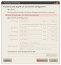 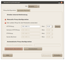
Konfiguration der Clients¶
Damit auf den angeschlossenen Clients die Kennwortabfrage wirksam werden kann und der WEB-Zugriff ermöglicht wird, müssen die Proxy-Einstellungen Systemweit angewandt werden. Dazu wird über das Menü in System > Einstellungen > Netzwerk-Proxy die IP-Adresse des Host, in unserem Fall 192.168.3.1 und der verwendete Port 3128 eingetragen. Die Einstellungen müssen dann "Systemweit übernommen" werden.
Der Browser Firefox und auch der Mail-Client Thunderbird muss separat konfiguriert werden. Bei den erweiterten Einstellungen, Registerkarte "Netzwerk" ist "Proxyeinstellungen des Systems verwenden" auszuwählen. Bei Anwahl einer beliebigen Webseite wird nun zunächst nach dem Benutzernamen und dem Kennwort gefragt.
Zusatzinformationen¶
IP-Adressen in lokalen Netzwerken
dnsmasq - Tipps und Tricks auf linuxwiki.de

dnsmasq Manpages auf thekelleys.org.uk

Links¶
Internet und Netzwerk und Netzwerk
 - Übersichten zu verschiedenen Netzwerkthemen
- Übersichten zu verschiedenen NetzwerkthemenWLAN
- alles rund um Wireless LANHeimnetzwerk - Daten in einem LAN austauschen
- Erstellt mit Inyoka
-
 2004 – 2017 ubuntuusers.de • Einige Rechte vorbehalten
2004 – 2017 ubuntuusers.de • Einige Rechte vorbehalten
Lizenz • Kontakt • Datenschutz • Impressum • Serverstatus -
Serverhousing gespendet von